<!doctype html>
<html lang="en">
<head>
  <meta charset="utf-8">
  <meta name="viewport" content="width=device-width, initial-scale=1">
  <title>arxiv digest — 2026-08-11</title>
  <style>
:root {
  --bg: #ffffff;
  --fg: #1f2328;
  --muted: #59636e;
  --border: #d0d7de;
  --card: #f6f8fa;
  --link: #0969da;
}
body {
  max-width: 980px;
  margin: 0 auto;
  padding: 2rem 1rem 5rem;
  font-family: -apple-system, BlinkMacSystemFont, "Segoe UI", Helvetica, Arial, sans-serif;
  line-height: 1.55;
  color: var(--fg);
  background: var(--bg);
}
a { color: var(--link); }
img { max-width: 100%; height: auto; }
pre, code { background: var(--card); border-radius: 6px; }
pre { padding: 1rem; overflow-x: auto; }
blockquote { border-left: 4px solid var(--border); padding-left: 1rem; color: var(--muted); }
details { margin: 0.6rem 0; }
summary { cursor: pointer; font-weight: 600; }
.paper-figures-scroll {
  display: flex;
  gap: 1rem;
  overflow-x: auto;
  overscroll-behavior-x: contain;
  padding: 0.75rem 0.25rem 1rem;
  margin: 1rem 0 1.25rem;
  border-top: 1px solid var(--border);
  border-bottom: 1px solid var(--border);
  scroll-snap-type: x proximity;
}
.paper-figure-card {
  flex: 0 0 min(260px, 72vw);
  scroll-snap-align: start;
  background: var(--card);
  border: 1px solid var(--border);
  border-radius: 12px;
  padding: 0.55rem;
}
.paper-figure-card img {
  display: block;
  width: 100%;
  max-height: 240px;
  object-fit: contain;
  background: white;
  border-radius: 8px;
}
.paper-figure-caption {
  display: block;
  margin-top: 0.5rem;
  color: var(--muted);
  font-size: 0.85rem;
}
.figure-strip-hint {
  color: var(--muted);
  font-size: 0.9rem;
  margin-bottom: -0.3rem;
}
</style>
  <!-- MathJax: renders $...$ inline math and $$...$$ display math, plus
       \(...\) and \[...\]. Loaded from the official CDN; works offline
       once cached. Configured to skip code/pre blocks so arxiv IDs that
       look like dollar amounts don't get mangled. -->
  <script>
    window.MathJax = {
      tex: {
        inlineMath: [['$', '$'], ['\\(', '\\)']],
        displayMath: [['$$', '$$'], ['\\[', '\\]']],
        processEscapes: true,
        processEnvironments: true
      },
      options: {
        skipHtmlTags: ['script', 'noscript', 'style', 'textarea', 'pre', 'code'],
        ignoreHtmlClass: 'tex2jax_ignore',
        processHtmlClass: 'tex2jax_process'
      }
    };
  </script>
  <script id="MathJax-script" async
    src="https://cdn.jsdelivr.net/npm/mathjax@3/es5/tex-chtml.js"></script>
</head>
<body>
<header style="background-color: #333; color: white; padding: 15px; margin-bottom: 20px;">
  <h1 style="margin: 0; font-size: 24px;">
    <a href="https://ochelpan.github.io/arXiv_clean/" style="color: white; text-decoration: none;">Main</a>
  </h1>
</header>

<h1>Daily arXiv Report</h1>

<hr>
<p>
<a href="index.html">← Index</a>
 · <a href="papers_03.html">← Previous</a> · <a href="papers_05.html">Next →</a>
</p>
<hr>

<h2>Papers 61–80</h2>
<p><a id="paper-2608.07443"></a></p>
<h3 id="a-quantum-geometric-mechanism-for-chiral-domain-wall-metastability-application-to-twisted-transition-metal-dichalcogenides"><a href="http://arxiv.org/abs/2608.07443v1">A quantum geometric mechanism for chiral domain wall metastability: Application to twisted transition-metal dichalcogenides</a></h3>
<p><strong>Authors:</strong> Nisarg Chadha, Qiang Gao, Eslam Khalaf, Zhaoyu Han<br>
<strong>Type:</strong> theory · <strong>Category:</strong> strongly correlated electrons · <strong>PDF:</strong> <a href="https://arxiv.org/pdf/2608.07443v1">https://arxiv.org/pdf/2608.07443v1</a><br>
<strong>Analysis basis:</strong> full PDF text, analyzed in chunks
<strong>Topic relevance:</strong> <code>driven-dissipative phase transition</code> <strong>2/5</strong> · <code>Keldysh / 2PI / non-Gaussian methods</code> <strong>1/5</strong> · <code>analog quantum simulation</code> <strong>1/5</strong> · <code>spintronics-quantum-optics interface</code> <strong>1/5</strong></p>
<div class="figure-strip-hint">↔ Scroll figures horizontally</div>
<div class="paper-figures-scroll">
<figure class="paper-figure-card">
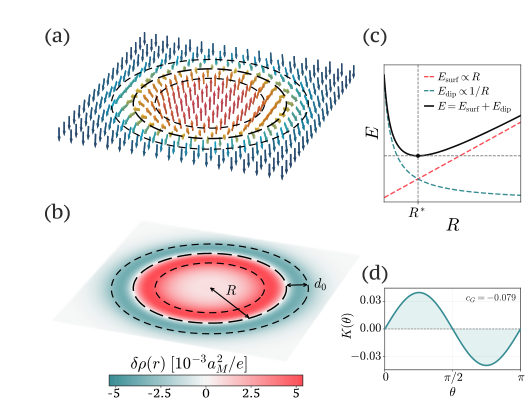
<figcaption class="paper-figure-caption"><b>Fig 1.</b> FIG. 1. Schematic of a quantum-geometric chiral domain wall. (a) shows the schematic of a chiral domain wall of the form described by Eq. (4) with an in-plane wind- ing Nw = 1 in an Ising ferromagnet. (b) shows the induced charge density for the projector given by Eq. (14) with the chiral domain wall in Eq. (4) with R = 14ℓB and d0 = 4ℓB for a system of conjugate lowest Landau levels. (c) shows the competition in the wall energy arising from the surface tension 2πσR and dipolar repulsion ∼(NwcG)2/R, giving a finite-radius metastable minimum. (d) K(θ) vs θ for the spin texture described in Eq. (14) for a setup of two conjugate lowest Landau levels with a mesh size of Nk = 18. The cal-...</figcaption>
</figure>
<figure class="paper-figure-card">
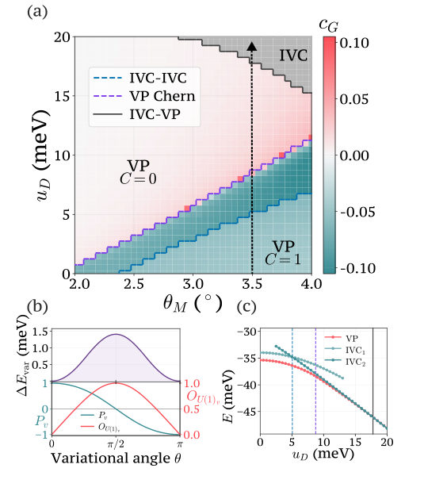
<figcaption class="paper-figure-caption"><b>Fig 2.</b> FIG. 2. Hartree-Fock calculations for cG in the con- tinuum model for tMoTe2. (a) shows the values of cG extrapolated from HF calculations as a function of varying twist angle θM and displacement field uD. (b) shows the en- ergy expectation value per moir´e unit cell and the VP (Pv) and IVC (OU(1)v) order parameters for the variational state parametrized by θ and given by the ground state of the trial Hamiltonian ˆHMF(θ, ϕ) given in Eq. (1) for the tMoTe2 con- tinuum model with twist angle θM = 3.5◦and uD = 0. The variational energy is given with respect to the VP state. (c) HF energy per unit cell for the different phases along a line cut shown by the arrow in (a).</figcaption>
</figure>
<figure class="paper-figure-card">
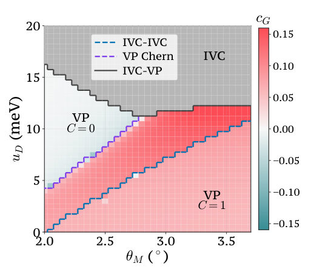
<figcaption class="paper-figure-caption"><b>Fig 3.</b> FIG. 3. Hartree-Fock phase diagram and cG in twisted WSe2. This figure shows the HF phase diagram cG and the computed values of cG across a range of displacement field uD and twist angle θM. cG carries the opposite sign compared to tMoTe2 because at these parameters the signs of the Chern numbers in each valley are flipped compared to tMoTe2.</figcaption>
</figure>
</div>

<p><strong>Summary.</strong> The paper develops a theory showing that band topology dictates a dipole moment associated with chiral domain walls in ferromagnets. Applied to twisted TMDs, this geometric coefficient ($c_G$) predicts that the DW metastability is highly sensitive to topological phase transitions, offering a new diagnostic tool for probing quantum geometry in moiré materials.</p>
<p><strong>Why it may be interesting.</strong> This work provides a concrete example of how subtle quantum geometric invariants (like the second Chern form moment) can govern macroscopic stability properties (metastability) in condensed matter systems, linking topology directly to observable dynamics.</p>
<details>
<summary>Detailed structure</summary>
<p><strong>Main problem.</strong> The study investigates how band topology, specifically through a geometric dipole moment, can stabilize chiral domain walls (DWs) in ferromagnets even when the net charge response vanishes.</p>
<p><strong>Main result.</strong> A non-zero geometric dipole coefficient ($c_G$) leads to an energy cost that stabilizes DWs against collapse, and this coefficient is highly sensitive to topological phase transitions within twisted TMDs like tMoTe2.</p>
<p><strong>Method.</strong> The authors use symmetry-constrained Hartree-Fock methods on the occupied projector to calculate the mixed real-space–momentum-space second Chern form, which yields $c_G$.</p>
<p><strong>Model / system.</strong> The system is modeled using twisted transition-metal dichalcogenides (tTMDs) exhibiting conjugate Chern bands. The theory interpolates between Valence Polarized (VP) and Inter-Valley Coherent (IVC) states via a trial Hamiltonian $\hat{H}_{	ext{MF}}(\theta, \phi)$.</p>
<p><strong>Key observables.</strong> Geometric dipole coefficient ($c_G$), transverse dipole density, domain wall energy $E(R)$, and the Chern number ($C$).</p>
<p><strong>Important parameters / regimes.</strong> Twist angle ($\theta_M$), layer bias ($u_D$), Zeeman field strength, and the competition between dipolar repulsion and surface tension.</p>
<p><strong>Assumptions / limitations.</strong> The analysis assumes an internal relative U(1) spin symmetry and time-reversal symmetry. Calculations are performed in the weak coupling regime for some analyses.</p>
<p><strong>Figures summary.</strong> Figures illustrate the dependence of $c_G$ on system parameters, showing sharp drops across topological transitions (e.g., $C=1$ to $C=0$) that correlate with changes in domain wall stability.</p>
<p><strong>Paper structure.</strong> The paper establishes a theoretical framework linking band topology to dipole moments in DWs. It then applies this formalism to tTMDs, calculating $c_G$ using HF methods and demonstrating how its variation explains experimental observations of long-lived excitations near topological phase boundaries.</p>
</details>
<details>
<summary>Abstract</summary>
<p>Band topology can have an imprint on the excitations of a ferromagnet. A known example is quantum Hall ferromagnets and their lattice analogs; when both flavors have the same Chern number $C$, a smooth skyrmion texture binds charge $-eC$ per unit winding. Here, we consider instead the case of conjugate Chern bands related by time-reversal. We show that, despite the vanishing net charge response, a smooth texture can be associated with a dipole response---a domain wall (DW) with an in-plane winding along its length can bind a nonzero dipole density transverse to the wall. The strength of this dipole density is controlled by a dimensionless coefficient $c_G$. Although not quantized, the geometric dipole coefficient $c_G$ is a moment of the second Chern form of the occupied projector in mixed (momentum and order-parameter) space and is generally nonzero. The dipole-decorated DW can thus become metastable at a finite radius due to the competition between dipolar repulsion and the usual surface tension, even at a finite Zeeman field. In a realistic model of twisted MoTe$_2$, we find that $c_G$ drops sharply across a transition within the valley-polarized (VP) phase from a $C=1$ to a $C=0$ ferromagnet. This naturally explains recent pump-probe experiments~\cite{exp} at hole filling $ν=1$, in which a long-lived excitation survives reverse fields far exceeding the saturation field but disappears at an intermediate displacement field despite only weak changes in conventional magnetic diagnostics. Metastable spin textures thus serve as a sensitive probe of band quantum geometry, and as an intrinsic bottleneck for fast optical control of moiré ferromagnets in Chern-conjugate bands.</p>
</details>
<p><sub><a href="#top">↑ back to top</a></sub></p>

<p><a id="paper-2608.07431"></a></p>
<h3 id="designer-codes-from-gala-compact-self-dual-and-rate-12-qec-on-reconfigurable-atom-arrays"><a href="http://arxiv.org/abs/2608.07431v1">Designer Codes from GALA: Compact, Self-Dual, and Rate-1/2 QEC on Reconfigurable Atom Arrays</a></h3>
<p><strong>Authors:</strong> Willers Yang, Casey Duckering, Arpit Dua<br>
<strong>Type:</strong> theory · <strong>Category:</strong> quantum information and computing · <strong>PDF:</strong> <a href="https://arxiv.org/pdf/2608.07431v1">https://arxiv.org/pdf/2608.07431v1</a><br>
<strong>Analysis basis:</strong> full PDF text, analyzed in chunks
<strong>Topic relevance:</strong> <code>QC/QI experiment</code> <strong>2/5</strong> · <code>Rydberg arrays</code> <strong>1/5</strong> · <code>analog quantum simulation</code> <strong>1/5</strong></p>
<div class="figure-strip-hint">↔ Scroll figures horizontally</div>
<div class="paper-figures-scroll">
<figure class="paper-figure-card">
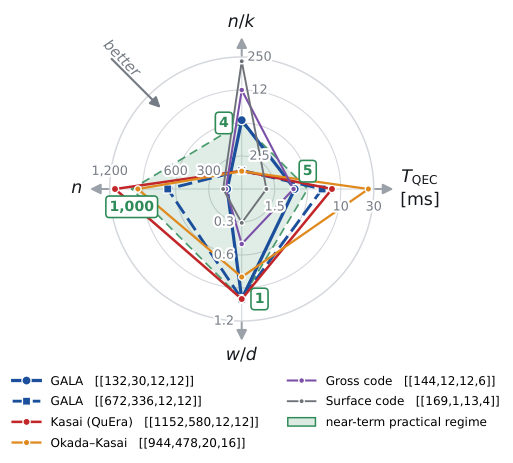
<figcaption class="paper-figure-caption"><b>Fig 1.</b> FIG. 1. GALA codes simultaneously achieve low qubit over- head (n/k, top axis), compact block length (n, left axis), short syndrome-extraction cycles (TQEC, right axis) and low ratio of stabilizer weight w to distance d (w/d, bottom axis) on re- configurable atom arrays. The code parameters in the legend are labeled as [n, k, d, w].</figcaption>
</figure>
<figure class="paper-figure-card">
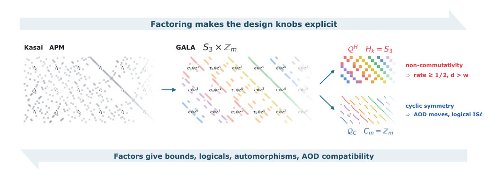
<figcaption class="paper-figure-caption"><b>Fig 2.</b> FIG. 2. GALA: a family of two-block codes lifted over a product group G = Hk ×Cm: the small non-abelian Hk supplies active orthogonality, achieving high rate and above-check-weight distance, while the large abelian Cm supplies symmetries that give both code automorphisms and parallel AOD row/column moves explicitly.</figcaption>
</figure>
<figure class="paper-figure-card">
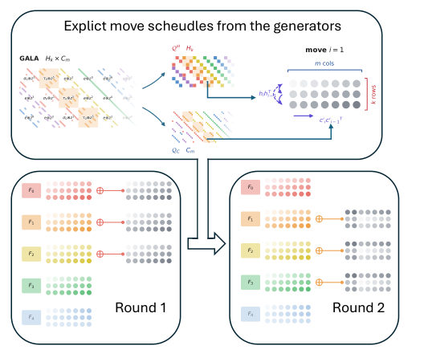
<figcaption class="paper-figure-caption"><b>Fig 3.</b> FIG. 3. Layout and syndrome-extraction schedule read off from the generators. Data atoms occupy a kp × Lq grid and check atoms a kp × Jq grid, writing Cm = Cp × Cq; the row coordinate carries the Hk index and the Cp component, the column coordinate carries the block index and the Cq compo- nent. Round i pairs each check with the data atom selected by the generator at that position of the block circulant, so the rearrangement between consecutive rounds is the transi- tion element FiF T i−1, which for a direct product factors into one rigid row translation σr,i and one rigid column translation σc,i (Eq. (4))—a single pair of AOD sweeps per round.</figcaption>
</figure>
<figure class="paper-figure-card">
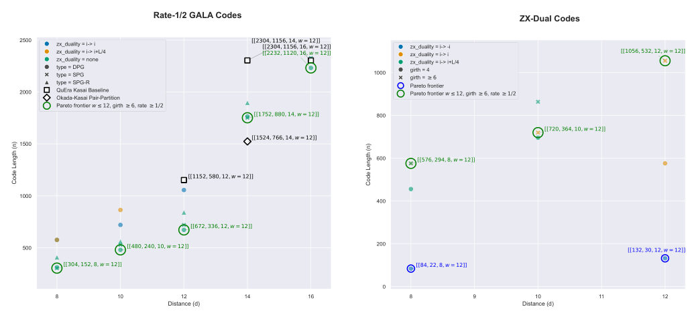
<figcaption class="paper-figure-caption"><b>Fig 4.</b> FIG. 4. GALA codes (lower-right is better). Left: compact codes with n ≤2500, rate ≥1/2, weight ≤12, girth ≥6. Best instances are highlighted in green, including the compact [[480, 240, 10]] and [[672, 336, 12]] and the above-weight [[1752, 880, 14]] and [[2232, 1120, 16]], all shorter than the co-designed Kasai baselines (black) [2]. Rate-1/2 pair-partition codes of Ref. [10] are shown for comparison. Right: ZX-dual codes with fold-transversal gates, notably a girth-4 [[132, 30, 12]] at rate 0.227 and a girth-6, rate-1/2 [[1056, 532, 12]]. Every distance shown for a GALA instance is certified exactly, by complete exclusion of all lower-weight logical operators together with an explicit...</figcaption>
</figure>
</div>

<p><strong>Summary.</strong> The paper introduces GALA codes, an algebraic framework for designing Quantum Error Correction codes tailored specifically for reconfigurable neutral-atom arrays. By constructing these codes using group lifts, the authors ensure that desirable properties like high rate and compatibility with physical gate operations are built in from the start. This yields several highly optimized code candidates suitable for near-term quantum computation.</p>
<p><strong>Why it may be interesting.</strong> This work directly bridges abstract quantum error correction theory with concrete physical hardware constraints (AODs, limited qubits) by embedding hardware requirements into the code design process itself.</p>
<details>
<summary>Detailed structure</summary>
<p><strong>Main problem.</strong> The core problem is designing Quantum Error Correction (QEC) codes that are compact, self-dual, and maintain a high encoding rate ($\ge 1/2$) for implementation on near-term quantum hardware.</p>
<p><strong>Main result.</strong> The authors introduce GALA codes, which provide an algebraically transparent construction method yielding several highly desirable instances, including a compact $[[132, 30, 12]]$ code with low logical error rates.</p>
<p><strong>Method.</strong> They use Group-Action Lifts over product groups ($G = H_k 	imes C_m$) to build codes. This construction makes hardware compatibility and desired logical operations customizable inputs rather than post-hoc checks.</p>
<p><strong>Model / system.</strong> The physical platform is reconfigurable neutral-atom arrays (RNAA) using qubits trapped in optical tweezers, with interactions controlled by acousto-optic deflectors (AODs). The code structure is defined algebraically via group theory lifts.</p>
<p><strong>Key observables.</strong> Code parameters such as block length ($n$), logical qubit count ($k$), distance ($d$), encoding rate ($r$), and syndrome extraction cycle time (TQEC).</p>
<p><strong>Important parameters / regimes.</strong> Rate $\ge 1/2$, girth $\ge 6$, low logical error rates ($ ext{LER} &lt; 10^{-8}$), and compatibility with AOD-based physical gates.</p>
<p><strong>Assumptions / limitations.</strong> The analysis assumes the ability to implement specific group structures ($H_k$ non-abelian, $C_m$ abelian) and relies on the algebraic framework of lifts over product groups.</p>
<p><strong>Figures summary.</strong> Figures compare GALA codes against baselines regarding overhead and cycle time; one figure illustrates the syndrome extraction schedule using AOD sweeps; another details the logical gates ($ ext{H}<em> au,     ext{S}</em> au$) for a specific code instance $[[132, 30, 12]]$ via its Gram matrix.</p>
<p><strong>Paper structure.</strong> The paper introduces GALA codes by defining their algebraic construction using product groups. It then details the resulting properties, presents several optimized code instances in tables (e.g., TABLE S4), and finally analyzes the explicit implementation of logical gates on a representative code instance.</p>
</details>
<details>
<summary>Abstract</summary>
<p>High rate quantum low-density parity-check codes on reconfigurable neutral-atom arrays can reduce the overhead of quantum error correction, but near-term devices support only hundreds of qubits with limited reconfigurability from a few crossed acousto-optic deflectors (AOD). A practical code must be compact in addition to low-overhead, with checks and logical gates mapping onto hardware-compatible physical instructions. We introduce the GALA codes, or Group-Action Lifts with Active orthogonality, that lifts over a product group $G = H_k \times C_m$ (or $H_k \ltimes C_m^k$). The small non-abelian factor $H_k$ supplies active orthogonality, reaching $1/2$ rate with above-weight distance, while the large abelian factor $C_m$ supplies symmetries that give code automorphisms and explicit, simple AOD move schedules. Hardware compatibility and logical capability thereby become customizable inputs to a code search rather than properties verified post-hoc, making GALA designer codes by construction. The GALA family contains several previously discovered rate-1/2 Kasai codes of Ref. [arXiv:2601.08824, arXiv:2604.16209] while exposing simpler parameter bounds, logical operations, and ZX-dual variants with AOD-compatible fold-transversal Clifford gates. Our search yields a compact self-dual $[[132, 30, 12]]$ with a small number of $4$-cycles (almost girth-6) and below $10^{-8}$ logical error rate (LER) for memory at $10^{-3}$ physical error rate, 3.1ms syndrome-extraction cycle and transversal Clifford gates; a girth-6, rate-$1/2$ $[[672, 336, 12]]$ with a 6.76ms cycle with below $10^{-10}$ LER (extrapolated) and rate-$1/2$ barrier-breaking $[[1752, 880, 14]]$ and $[[2232, 1120, 16]]$ with exactly certified distances greater than check weights and all smaller than previously known hardware compatible rate-1/2 codes.</p>
</details>
<p><sub><a href="#top">↑ back to top</a></sub></p>

<p><a id="paper-2608.07185"></a></p>
<h3 id="ultrafast-quantum-gate-operations-in-a-kramers-henneberger-atom-qubit"><a href="http://arxiv.org/abs/2608.07185v1">Ultrafast quantum gate operations in a Kramers-Henneberger atom Qubit</a></h3>
<p><strong>Authors:</strong> A. Tasnim Aynul, C. Li, L. Cruz Rodriguez, C. Figueira de Morisson Faria<br>
<strong>Type:</strong> theory · <strong>Category:</strong> quantum information and computing · <strong>PDF:</strong> <a href="https://arxiv.org/pdf/2608.07185v1">https://arxiv.org/pdf/2608.07185v1</a><br>
<strong>Analysis basis:</strong> full PDF text, analyzed in chunks
<strong>Topic relevance:</strong> <code>QC/QI experiment</code> <strong>2/5</strong> · <code>methods for driven-dissipative</code> <strong>1/5</strong> · <code>non-equilibrium dynamics</code> <strong>1/5</strong></p>
<div class="figure-strip-hint">↔ Scroll figures horizontally</div>
<div class="paper-figures-scroll">
<figure class="paper-figure-card">
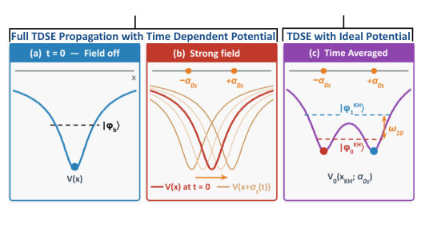
<figcaption class="paper-figure-caption"><b>Fig 1.</b> FIG. 1: Illustration of the Kramers-Henneberger approx- imation. (a) The field-free soft-core potential V (x) = −1/ √</figcaption>
</figure>
<figure class="paper-figure-card">
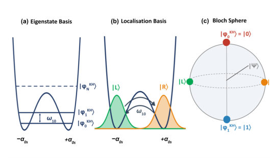
<figcaption class="paper-figure-caption"><b>Fig 2.</b> FIG. 2: Two equivalent basis representations for the KH atom qubit [panels (a) and (b)], together with their Bloch sphere representation [panel (c)]. Panel (a) shows the en- ergy level structure of the KH double-well potential: the two lowest KH eigenstates ϕKH 0 and ϕKH 1 , separated by the energy gap ω10, form the eigenstate qubit basis, with higher-lying states ϕKH N indicated by the dashed threshold line. Panel (b) shows the equivalent localisa- tion basis: the left- and right-localised states |L⟩and |R⟩, given by Eqs. (24) and (25), are coherent superpositions of the KH eigenstates localised in the left (−α0s) and right (+α0s) wells respectively, and undergo coherent os- cillation at...</figcaption>
</figure>
<figure class="paper-figure-card">
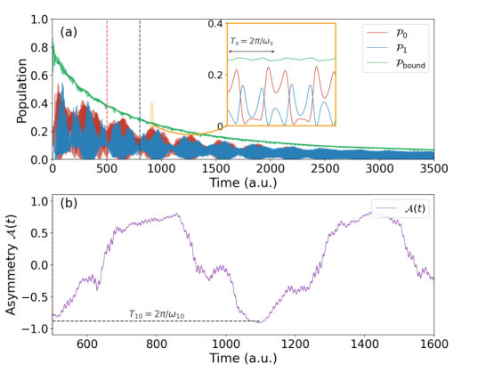
<figcaption class="paper-figure-caption"><b>Fig 3.</b> FIG. 3: Unnormalised qubit populations and asymme- try under the strong field alone, for ε0s = 5 a.u. and ωs = 0.7 a.u. (a) The populations P0 and P1 of the two lowest KH eigenstates ϕKH 0 and ϕKH 1 are shown together with the total bound population Pbound. Fol- lowing the initial ionisation burst during the strong-field turn-on, Pbound decays slowly, retaining roughly 10–15% of the initial population over the pulse. The dashed vertical lines mark two arbitrary times T (1) G = 500 a.u. and T (2) G = 800 a.u., after the onset of stabilisation at Tst = 470 a.u. (see Appendix A), for which weak pulses will be switched on in the subsequent analysis. The in- set magnifies 900 ≤t ≤920 a.u.,...</figcaption>
</figure>
<figure class="paper-figure-card">
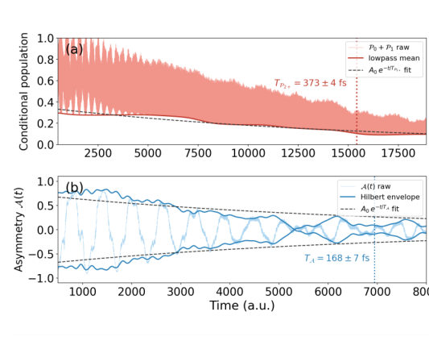
<figcaption class="paper-figure-caption"><b>Fig 4.</b> FIG. 4: Leakage times of the KH qubit under the strong field alone, for ε0s = 5 a.u. and ωs = 0.7 a.u. (a) Popu- lation decay: the qubit-subspace conditional population P0 + P1 (raw, light red) is lowpass filtered to remove the fast ωs oscillations and isolate the slow envelope (low- pass mean, solid red). An exponential fit (dashed) gives the time constant TP2+ = 373 ± 4 fs. The decay re- flects irreversible leakage to higher KH eigenstates P2+, driven by the residual fast oscillations at ωs, rather than coupling to an external bath. (b) Leakage time com- puted from the asymmetry parameter: the raw inter-well asymmetry A(t) (light blue) is bandpass filtered around ω10, and the amplitude of...</figcaption>
</figure>
<figure class="paper-figure-card">
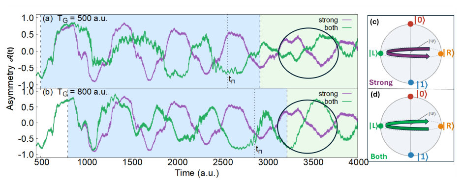
<figcaption class="paper-figure-caption"><b>Fig 5.</b> FIG. 5: Asymmetry A(t) for the π pulse at ε0w = 0.0003 a.u. (a) TG = 500 a.u. and (b) TG = 800 a.u.: the both- fields result (green) is compared against the strong-field-only reference (purple). The background shading indicates the pulse timing: the white region before the first dashed line is the pre-pulse interval where only the strong field is present, the blue shaded region marks the weak pulse window (bounded by the dashed vertical lines at the start and end of the weak pulse), and the green region marks the post-pulse evolution under the strong field alone, after the weak pulse has switched off. The dotted vertical line marks the completion time tπ = τ2 + π/ΩR (at TG + tπ on the...</figcaption>
</figure>
</div>

<p><strong>Summary.</strong> The paper introduces the Kramers-Henneberger atom as a promising, ultrafast platform for quantum computing. By engineering the potential using intense laser fields, they demonstrated coherent single-qubit gates (Z and S) operating on femtosecond timescales. This work suggests a clear pathway toward attosecond-scale quantum operations limited by structured leakage rather than environmental decoherence.</p>
<p><strong>Why it may be interesting.</strong> This work proposes an entirely new physical mechanism—utilizing strong field dressing to define a qubit basis—for achieving quantum gates at unprecedented speeds, bridging attosecond physics with quantum computation.</p>
<details>
<summary>Detailed structure</summary>
<p><strong>Main problem.</strong> The authors propose using the Kramers-Henneberger (KH) atom as a novel platform to achieve ultrafast single-qubit gate operations.</p>
<p><strong>Main result.</strong> They demonstrated coherent Z and S gates on femtosecond timescales, which is six orders of magnitude faster than current superconducting qubit gates.</p>
<p><strong>Method.</strong> The study relies on solving the time-dependent Schrödinger equation (TDSE) in both the length gauge and a transformed KH frame.</p>
<p><strong>Model / system.</strong> The physical system is an electron governed by the dynamics within a strong, time-varying laser field, modeled using the KH potential. The qubit basis is defined by the two lowest eigenstates engineered by the strong driving field itself.</p>
<p><strong>Key observables.</strong> Gate fidelity, gate operation timescales (femtoseconds), and decoherence times.</p>
<p><strong>Important parameters / regimes.</strong> Strong field parameters ($\epsilon_{0s} = 5.0$ a.u., $\omega_s = 0.7$ a.u.) and weak control field frequencies ($\omega_w$).</p>
<p><strong>Assumptions / limitations.</strong> The fidelity is limited by structured leakage rather than stochastic decoherence, suggesting the process can be error-suppressed via pulse engineering.</p>
<p><strong>Paper structure.</strong> The paper introduces the KH atom as a qubit platform, derives the Hamiltonian in different gauges (length and KH frame), simulates gate operations using TDSE solvers, and compares results between full time-dependent and time-averaged descriptions to confirm feasibility.</p>
</details>
<details>
<summary>Abstract</summary>
<p>We propose and demonstrate the Kramers-Henneberger KH) atom as a novel qubit platform for ultrafast single-qubit gate operations. In the KH frame, the time-averaged strong laser field engineers a double-well potential whose two lowest eigenstates define the qubit basis, so that the computational structure is created and maintained by the driving field itself. A weak resonant control field drives coherent gate operations: full time-dependent Schrödinger equation simulations with the complete time-dependent KH potential confirm a Z gate and S gate of the order of femtoseconds, six orders of magnitude faster than laser-driven superconducting qubit gates. Decoherence characterisation gives longer decoherence times than those required for the gate operations. The complete six-gate single-qubit set is demonstrated in the time-averaged two-level limit, with strong agreement between the full and time-averaged descriptions confirming that fidelity is limited by structured leakage rather than stochastic decoherence. In principle, this is an error channel suppressible through pulse engineering. These results constitute the first demonstration of coherent single-qubit gates in a strong-field setting, with a clear pathway toward attosecond-scale operations.</p>
</details>
<p><sub><a href="#top">↑ back to top</a></sub></p>

<p><a id="paper-2608.06570"></a></p>
<h3 id="exact-quantum-circuits-for-lattice-boltzmann-realization-of-the-dirac-equation"><a href="http://arxiv.org/abs/2608.06570v1">Exact quantum circuits for lattice Boltzmann realization of the Dirac equation</a></h3>
<p><strong>Authors:</strong> Nilesh Sawant, Ethan Young, Kevin Griffin, Michael Martin<br>
<strong>Type:</strong> theory · <strong>Category:</strong> quantum information and computing · <strong>PDF:</strong> <a href="https://arxiv.org/pdf/2608.06570v1">https://arxiv.org/pdf/2608.06570v1</a><br>
<strong>Analysis basis:</strong> full PDF text, analyzed in chunks
<strong>Topic relevance:</strong> <code>non-equilibrium dynamics</code> <strong>2/5</strong> · <code>methods for driven-dissipative</code> <strong>1/5</strong></p>
<div class="figure-strip-hint">↔ Scroll figures horizontally</div>
<div class="paper-figures-scroll">
<figure class="paper-figure-card">
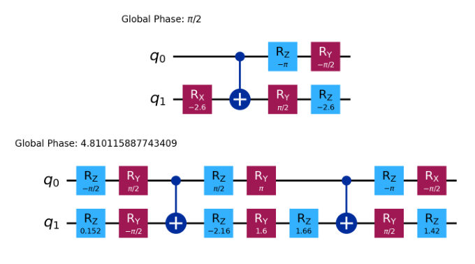
<figcaption class="paper-figure-caption"><b>Fig 1.</b> Figure 1: Transpiled unit gates on the two spinor qubits, in the basis {Rz, Ry, Rx, CX}. Top: the fixed x–rotation Rx of Eq. (8) (one CX, depth 4). Bottom: the collision ˆQ( ˜m=0.3, ˜g=0.1) of Eq. (10) (two CX, depth 9). Both reproduce their target 4 × 4 unitary to gate fidelity 1 (twelve digits).</figcaption>
</figure>
<figure class="paper-figure-card">
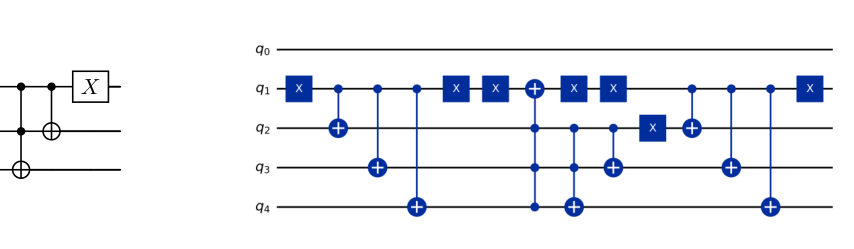
<figcaption class="paper-figure-caption"><b>Fig 2.</b> Figure 2: Streaming circuits. Left: the increment +1 mod 2npos of Eq. (15) for npos = 3 (a ripple of multi–controlled–X gates). Right: the reflecting (bounce–back) streaming of Section 5.5 for npos = 3: the direction qubit q1 is folded into the position register (controlled complement), a single (npos+1)–bit increment is applied, and the register is unfolded. A mover reaching a wall crosses the fold and returns with its direction reversed. Each adjacent pair of X gates on the q1 line is the identity (X2 = I): the panel shows the unoptimized, hand–built circuit, in which those Xs separately bracket the controlled complement and set q1 as the increment’s most significant bit, and the...</figcaption>
</figure>
<figure class="paper-figure-card">
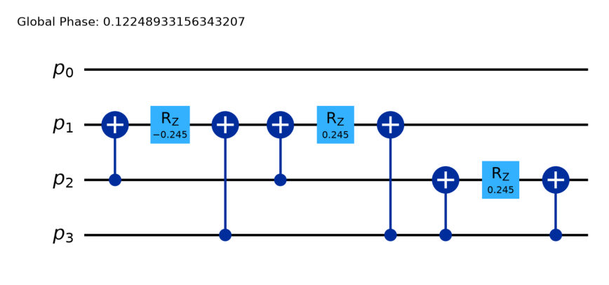
<figcaption class="paper-figure-caption"><b>Fig 3.</b> Figure 3: The transpiled massless potential phase oracle OV of Eq. (19) for the npos = 4 barrier of Table 3: ˜g = 0.5 on the four sites x = 6, 7, 8, 9 of a 16–site line and 0 elsewhere, compiled to {Rz, Ry, Rx, CX} (six CX, three Rz(±θ/2), depth 9, and a global phase θ/4, with θ = 2 arctan(1</figcaption>
</figure>
<figure class="paper-figure-card">
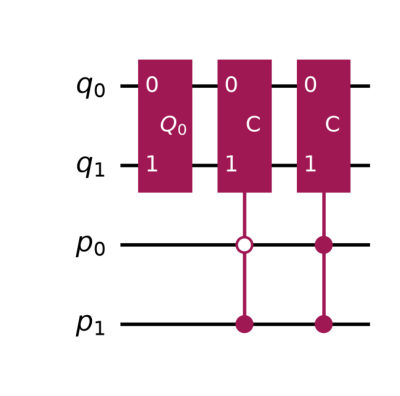
<figcaption class="paper-figure-caption"><b>Fig 4.</b> Figure 4: Position–multiplexed collision for a massive potential (Eq. (20)), on a npos = 2 line with a two–site barrier (˜g = 0.5 on sites x = 2, 3, mass ˜m = 0.3). The vacuum collision ˆQ0 = ˆQ( ˜m, 0) acts on the two spinor qubits (q0, q1) unconditionally; the correction C = ˆQ( ˜m, ˜g) ˆQ( ˜m, 0)−1 is applied to the spinor under control of the position register (p0, p1), once per barrier site (filled circle: control on 1; open circle: control on 0). Off the barrier C is the identity, so no gate is placed there. The two corrections shown share the same C and p1=1, hence reduce to a single C controlled on p1=1.</figcaption>
</figure>
<figure class="paper-figure-card">
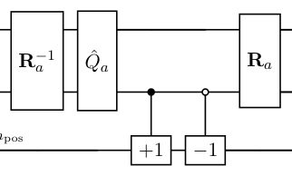
<figcaption class="paper-figure-caption"><b>Fig 5.</b> Figure 5: One QLB substep along axis a (Eq. (6), Algorithm 3): rotate into the characteristic frame, collide on the two spinor qubits, stream by a q1–controlled increment/decrement of the position register, and rotate back. The filled/open control on q1 selects increment/decrement; for reflecting walls the two controlled shifts are replaced by the single folded increment of Algorithm 2. For a massless potential the collision is replaced by the phase oracle (19) on the position register.</figcaption>
</figure>
</div>

<p><strong>Summary.</strong> This paper translates the classical Quantum Lattice Boltzmann method for solving the Dirac equation into an exact sequence of quantum gates. By mapping every physical step—including streaming and collision—to specific unitary circuits, the authors prove that this complex simulation can be run on a gate-model quantum computer. This work establishes a blueprint for simulating relativistic fermionic dynamics using quantum computation.</p>
<p><strong>Why it may be interesting.</strong> It demonstrates a concrete pathway to implementing complex, non-equilibrium quantum dynamics (like Dirac evolution) directly using known quantum gate primitives, which is crucial for developing quantum simulation algorithms beyond simple Hamiltonians.</p>
<details>
<summary>Detailed structure</summary>
<p><strong>Main problem.</strong> To determine if the Succi–Dellar Dirac Quantum Lattice Boltzmann (QLB) scheme can be written exactly as a quantum circuit.</p>
<p><strong>Main result.</strong> The authors provide an exact, gate-level construction for every operation of the 3D Dirac QLB scheme, reproducing classical results to machine precision on state-vector emulators.</p>
<p><strong>Method.</strong> They map each elementary physical operation (rotation, collision, streaming shift) into a sequence of fundamental quantum gates and circuits.</p>
<p><strong>Model / system.</strong> The model is the Dirac equation solved via the QLB scheme on a lattice. The simulation uses amplitude encoding across separate spinor and position registers to represent the field state.</p>
<p><strong>Key observables.</strong> Density deviation (reproduced to machine precision), particle velocity ($v_g$), group velocities, and mean speed relative to $c$.</p>
<p><strong>Important parameters / regimes.</strong> Lattice size ($N$), dimensionless mass ($   ilde{m}$), potential couplings, and the number of qubits required ($\propto \log N$).</p>
<p><strong>Assumptions / limitations.</strong> The scope is limited to establishing implementability on a gate-model quantum computer; state preparation and measurement costs are left as open questions.</p>
<p><strong>Figures summary.</strong> References include comparisons of classical vs. qubit circuit implementations, and analysis showing how oblique motion slows massless particles below $c$ in 2D/3D lattices compared to continuum estimates.</p>
<p><strong>Paper structure.</strong> The paper first establishes the unitary nature of the QLB steps, then provides gate-level constructions for all components (rotation, collision, shift). It verifies these circuits on emulators across 1D, 2D, and 3D tests before discussing physical implications like velocity dispersion.</p>
</details>
<details>
<summary>Abstract</summary>
<p>The quantum lattice Boltzmann (QLB) scheme of Succi and Dellar advances a four-component Dirac spinor on a lattice by a fixed sequence of local, exactly norm-preserving operations: a basis rotation, a collision, a streaming shift, and the inverse rotation. This unitarity is a structural property of the scheme, not an approximation, which suggests that a QLB time step should map onto a sequence of quantum gates. Here we make that mapping explicit. We give a gate-level construction of every operation of the three-dimensional Dirac QLB scheme: the fixed rotation gates, the collision gate, the streaming shift as a controlled increment on a position register, the position-dependent potential as a phase oracle, and periodic and reflecting (bounce-back) boundary conditions as unitary circuits. We then compose them into single-axis, two- and three-dimensional time steps. On a state-vector emulator the resulting circuits reproduce the classical QLB solver to machine precision (maximum density deviation between $3.7\times10^{-12}$ and $1.0\times10^{-17}$ across the one-, two-, and three-dimensional tests), so the circuits are the scheme rather than an approximation of it. The scope is narrow: we establish that the Succi-Dellar theory can be implemented on a (gate-model) quantum computer, and report the associated gate counts. We make no claim of computational advantage; state preparation, measurement, and asymptotic cost are discussed as open questions. All operators, circuits, tests, and figures are reproducible from the open-source quantumKineticMethods library.</p>
</details>
<p><sub><a href="#top">↑ back to top</a></sub></p>

<p><a id="paper-2608.06846"></a></p>
<h3 id="investigating-quantum-embedded-transformers-on-classical-datasets-for-cross-modality-classification"><a href="http://arxiv.org/abs/2608.06846v1">Investigating Quantum-Embedded Transformers on Classical Datasets for Cross-Modality Classification</a></h3>
<p><strong>Authors:</strong> Hao-Yuan Chen<br>
<strong>Type:</strong> experiment · <strong>Category:</strong> quantum information and computing · <strong>PDF:</strong> <a href="https://arxiv.org/pdf/2608.06846v1">https://arxiv.org/pdf/2608.06846v1</a><br>
<strong>Analysis basis:</strong> full PDF text, analyzed in chunks
<strong>Topic relevance:</strong> <code>QC/QI experiment</code> <strong>2/5</strong> · <code>methods for driven-dissipative</code> <strong>1/5</strong></p>
<div class="figure-strip-hint">↔ Scroll figures horizontally</div>
<div class="paper-figures-scroll">
<figure class="paper-figure-card">
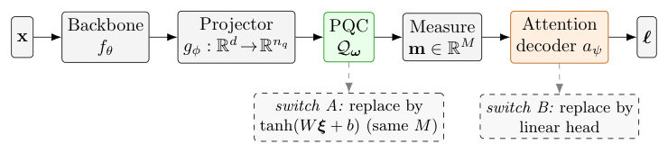
<figcaption class="paper-figure-caption"><b>Fig 1.</b> Figure 1: The core QEA pipeline of Eq. (2). A classical backbone and projector reduce the input to an nq-dimensional angle vector, a parameterized quantum circuit produces a vector of measurement statistics, and an attention decoder maps those statistics to class logits. The two dashed switches define the interface-matched factorial of Section 4: switch A replaces the circuit with an equal- width classical map, and switch B replaces the attention decoder with a linear head. The broader exploratory grid uses the QEA-R variant, which additionally concatenates the projected angles as a residual token stream; that variant is reported separately and is not used for component attribution.</figcaption>
</figure>
<figure class="paper-figure-card">
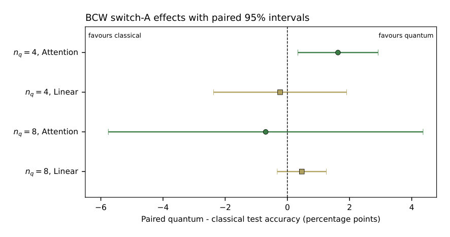
<figcaption class="paper-figure-caption"><b>Fig 2.</b> Figure 2: Paired quantum-minus-classical switch-A effects in the BCW factorial. Points denote the mean within-seed difference and error bars the 95% Student-t interval over five paired seeds. The vertical line marks zero. The plot makes visible both the isolated positive nq = 4 attention contrast and its failure to replicate at nq = 8; numerical values are in Table 2.</figcaption>
</figure>
<figure class="paper-figure-card">
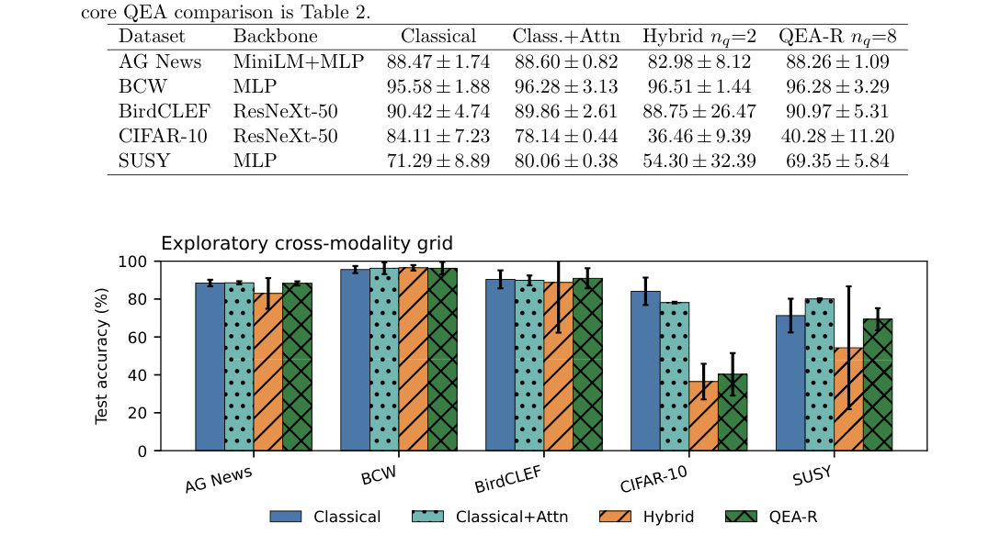
<figcaption class="paper-figure-caption"><b>Fig 3.</b> Figure 3: Exploratory cross-dataset comparison corresponding to Table 4. Error bars are 95% Student-t intervals; fill patterns distinguish methods without relying on color. The figure shows similar point estimates on three datasets, a QEA-R deficit on SUSY, and a large failure of both quantum models on CIFAR-10.</figcaption>
</figure>
</div>

<p><strong>Summary.</strong> This work tests a hybrid transformer model incorporating a Parameterized Quantum Circuit (PQC) for cross-modality classification. By performing controlled component attribution studies against classical baselines, the authors found no consistent evidence of a quantum advantage from the PQC layer. The study emphasizes that careful methodological controls are necessary before any performance gains can be attributed to the quantum components.</p>
<p><strong>Why it may be interesting.</strong> While focused on ML classification, the rigorous testing of PQC components against classical counterparts provides valuable insights into the necessary conditions for demonstrating genuine quantum utility in hybrid models, which is relevant to understanding resource scaling in complex quantum simulations.</p>
<details>
<summary>Detailed structure</summary>
<p><strong>Main problem.</strong> The paper investigates whether integrating a Parameterized Quantum Circuit (PQC) into a hybrid quantum-classical transformer architecture improves performance on classical cross-modality classification tasks.</p>
<p><strong>Main result.</strong> The controlled factorial analysis failed to show any consistent or statistically significant contribution from the PQC, concluding that no quantum advantage was established under the tested protocol.</p>
<p><strong>Method.</strong> A rigorous component attribution study using an interface-matched $2 	imes 2$ factorial design was employed, systematically replacing the PQC with classical maps and the attention decoder with linear heads.</p>
<p><strong>Model / system.</strong> The model is Quantum-Embedded Attention (QEA), which processes features through a learnable projector into an angle vector ($\xi$), feeds this into a shallow PQC acting on qubits to generate Pauli expectation values ($\mathbf{m}$), and finally uses a classical attention decoder.</p>
<p><strong>Key observables.</strong> Paired performance differences ($\Delta Q-C$) derived from the factorial analysis, accuracy metrics across multiple datasets (e.g., Breast Cancer Wisconsin).</p>
<p><strong>Important parameters / regimes.</strong> $n_q$ (number of qubits), $2 	imes 2$ factorial structure, and controlled comparison against classical baselines.</p>
<p><strong>Assumptions / limitations.</strong> The primary assumption is that component contributions can be isolated via interface-matched controls; the results are limited to ideal statevector simulations without hardware noise modeling.</p>
<p><strong>Figures summary.</strong> Notes reference tables detailing forward costs (scaling with $n_q$) and parameter counts for the factorial analysis, but no specific figure summaries were extracted.</p>
<p><strong>Paper structure.</strong> The paper introduces the QEA architecture, details the controlled component attribution methodology using a factorial design, presents results showing non-significant quantum contributions, discusses cross-modality performance descriptively, and concludes by emphasizing methodological rigor over claiming advantage.</p>
</details>
<details>
<summary>Abstract</summary>
<p>We test whether a parameterized quantum circuit (PQC) improves a hybrid quantum-classical model's performance on classical datasets, using an interface-matched classical map as the control while holding all other components fixed. Our architecture, Quantum-Embedded Attention (QEA), uses a learnable projector to compress backbone features into an $n_q$-dimensional angle vector, a shallow PQC to map those angles to one- and two-qubit Pauli expectations, and a classical attention decoder to produce class logits. We hypothesized the PQC would improve accuracy or seed-to-seed stability over a classical map with matched input/output dimensions. We test this with an interface-matched $2\times2$ factorial on Breast Cancer Wisconsin at $n_q\in\{4,8\}$, independently swapping the PQC for a classical map and the attention decoder for a linear head, across five paired seeds per cell. Three of four paired quantum-minus-classical $95\%$ confidence intervals include zero; the fourth, a $+1.63$ percentage-point contrast for the attention decoder at $n_q=4$, reverses sign at $n_q=8$ and does not survive correction across the four contrasts. The experiment thus shows no consistent PQC contribution and cannot establish equivalence. A five-dataset cross-modality grid shows comparable accuracy on AG~News, Breast Cancer Wisconsin, and BirdCLEF but a large deficit on CIFAR-10; these cells are not interface-matched and are interpreted descriptively. We report all planned canonical runs, distinguish current Pauli-readout results from legacy probability-readout experiments, and analyze bottleneck, simulation, finite-shot, and noise limitations. The results do not establish a quantum advantage; they demonstrate why controlled component attribution is necessary before crediting a hybrid model's performance to its quantum layer.</p>
</details>
<p><sub><a href="#top">↑ back to top</a></sub></p>

<p><a id="paper-2608.06500"></a></p>
<h3 id="free-energy-of-ising-models-under-a-spectral-condition"><a href="http://arxiv.org/abs/2608.06500v1">Free energy of Ising models under a spectral condition</a></h3>
<p><strong>Authors:</strong> Andrea Montanari, Michael Ren<br>
<strong>Type:</strong> theory · <strong>Category:</strong> disordered systems and neural networks · <strong>PDF:</strong> <a href="https://arxiv.org/pdf/2608.06500v1">https://arxiv.org/pdf/2608.06500v1</a><br>
<strong>Analysis basis:</strong> full PDF text, analyzed in chunks
<strong>Topic relevance:</strong> <code>Keldysh / 2PI / non-Gaussian methods</code> <strong>1/5</strong> · <code>analog quantum simulation</code> <strong>1/5</strong> · <code>driven-dissipative phase transition</code> <strong>1/5</strong> · <code>entanglement &amp; information structure</code> <strong>1/5</strong> · <code>exotic spin models in light-matter</code> <strong>1/5</strong> · <code>methods for driven-dissipative</code> <strong>1/5</strong> · <code>non-equilibrium dynamics</code> <strong>1/5</strong> · <code>non-equilibrium universality</code> <strong>1/5</strong></p>
<div class="figure-strip-hint">↔ Scroll figures horizontally</div>
<div class="paper-figures-scroll">
<figure class="paper-figure-card">
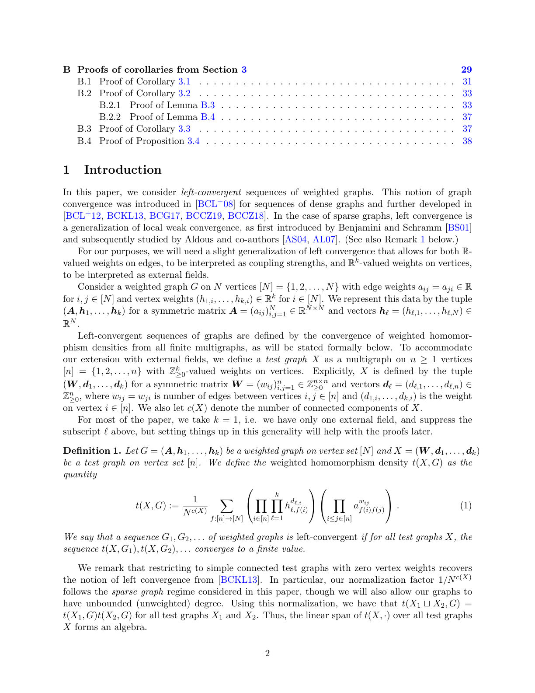
<figcaption class="paper-figure-caption"><b>Fig 1.</b> Low-resolution page preview, page 2</figcaption>
</figure>
<figure class="paper-figure-card">
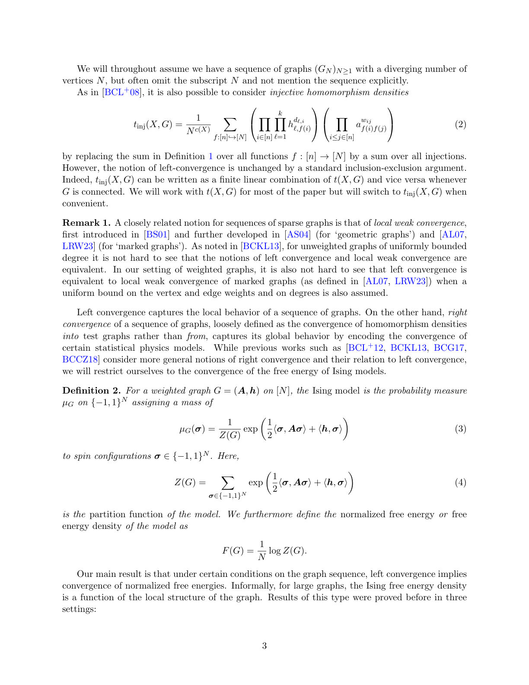
<figcaption class="paper-figure-caption"><b>Fig 2.</b> Low-resolution page preview, page 3</figcaption>
</figure>
<figure class="paper-figure-card">
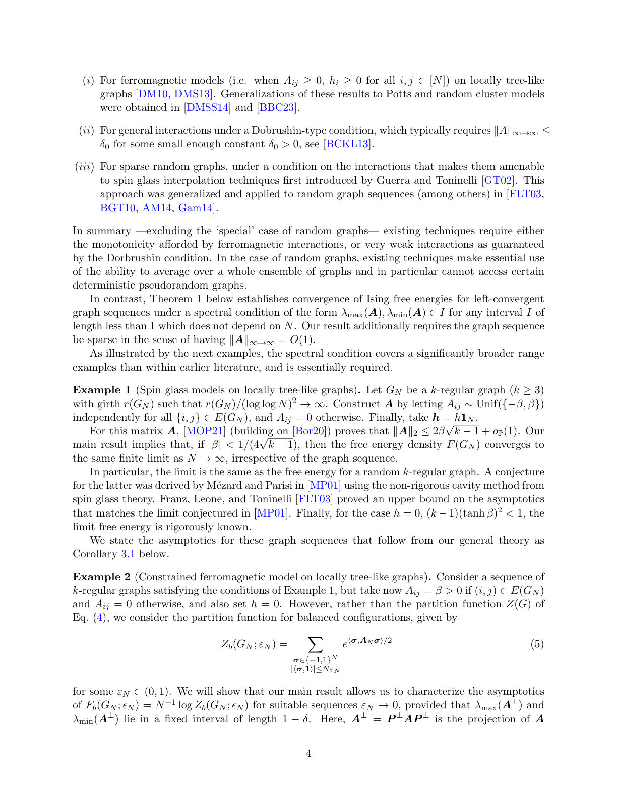
<figcaption class="paper-figure-caption"><b>Fig 3.</b> Low-resolution page preview, page 4</figcaption>
</figure>
<figure class="paper-figure-card">
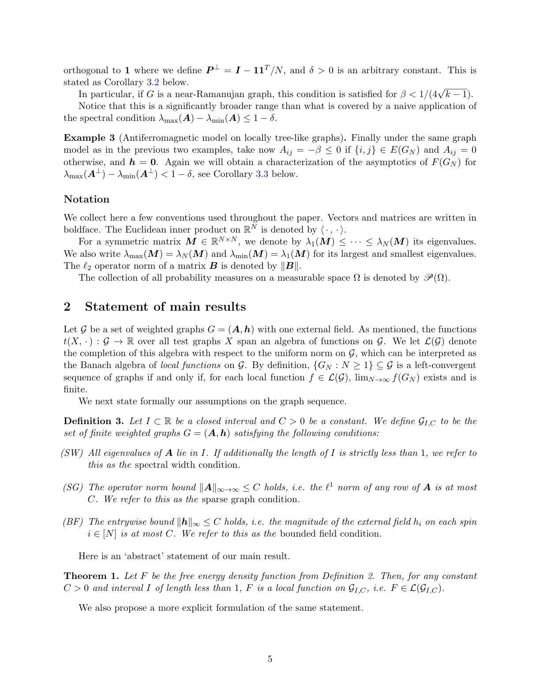
<figcaption class="paper-figure-caption"><b>Fig 4.</b> Low-resolution page preview, page 5</figcaption>
</figure>
<figure class="paper-figure-card">
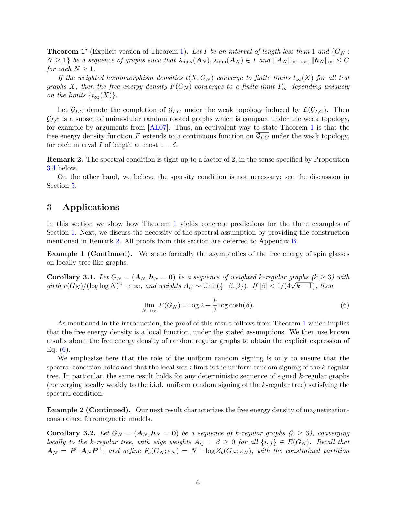
<figcaption class="paper-figure-caption"><b>Fig 5.</b> Low-resolution page preview, page 6</figcaption>
</figure>
</div>

<p><strong>Summary.</strong> This paper rigorously proves that for Ising models defined on sequences of weighted graphs, the free energy density remains stable (continuous) under a specific type of graph convergence called left convergence. This breakthrough relies on imposing a spectral condition on the graph's adjacency matrix and uses advanced techniques involving log-concavity and Langevin dynamics.</p>
<p><strong>Why it may be interesting.</strong> While focused on classical statistical mechanics, the rigorous mathematical framework connecting local graph structure convergence to global thermodynamic quantities is highly relevant to understanding complex systems modeled by neural networks or random graphs in quantum information theory.</p>
<details>
<summary>Detailed structure</summary>
<p><strong>Main problem.</strong> The central problem is determining which 'global' graph properties of an Ising model are determined by local weak convergence when the underlying graph structure converges in a specific sense.</p>
<p><strong>Main result.</strong> Under a spectral condition on the weighted adjacency matrix and sparsity assumptions, the free energy density of the Ising model is proven to be continuous with respect to the left convergence topology.</p>
<p><strong>Method.</strong> The proof utilizes decomposing the Ising measure into log-concave combinations of product measures and leveraging the rapid mixing properties of Langevin dynamics for such measures.</p>
<p><strong>Model / system.</strong> The system analyzed is the Ising Model on a weighted graph $G=(A, h)$, whose probability measure is defined by $\mu_G(\sigma) \propto \exp\left(rac{1}{2}\langle \sigma, A\sigma
angle + \langle h, \sigma
angle
ight)$. The analysis focuses on sequences of such graphs indexed by $N$.</p>
<p><strong>Key observables.</strong> The normalized free energy density, $F(G) = rac{1}{N} \log Z(G)$, is the primary observable.</p>
<p><strong>Important parameters / regimes.</strong> Spectral properties of the adjacency matrix (eigenvalues lying in an interval $I$ with $|I|<1$), graph sparsity ($\|A\|_{\infty}$ bounded), and external field strength ($h$).</p>
<p><strong>Assumptions / limitations.</strong> The core result requires a spectral condition on $A_N$ and that the sequence of graphs must be sparse. The continuity proof relies on log-concavity and rapid mixing.</p>
<p><strong>Figures summary.</strong> Not specified in the notes, but the results provide limit theorems for specific models like spin glasses and anti-ferromagnets.</p>
<p><strong>Paper structure.</strong> The paper establishes a general framework by relating graph convergence (left convergence) to physical properties. It then proves continuity of the free energy density under spectral conditions using advanced tools from stochastic processes (Langevin dynamics) before deriving explicit limit theorems for various disordered models.</p>
</details>
<details>
<summary>Abstract</summary>
<p>A sequence of sparse weighted graphs $(G_N:N\ge 1)$ indexed by the number of vertices $N$ is said to be left-convergent if all (suitably weighted) subgraph counts converge to a limit as $N\to\infty$. This notion generalizes in a natural way Benjamini-Schramm's definition of local weak convergence. A broad research agenda aims at determining which `global' graph properties are determined by left or local weak convergence (in other words, which of these properties are in fact local). We prove that, under a spectral condition on the weighted adjacency matrix ${\boldsymbol A}_N$ of graph $G_N$, the free energy density of the Ising model on this weighted graph is continuous in the left convergence topology (and hence is a local function). Our proof uses the decomposition of the Ising measure as a log-concave combination of product measures, and of the rapid mixing of Langevin dynamics for log-concave measures. As applications, we derive new limit theorems for the free energy density of spin glasses, antiferromagnets, and magnetization constrained ferromagnetic models, on locally tree-like graphs.</p>
</details>
<p><sub><a href="#top">↑ back to top</a></sub></p>

<p><a id="paper-2608.07195"></a></p>
<h3 id="distribution-of-the-radius-of-gyration-for-an-isaw"><a href="http://arxiv.org/abs/2608.07195v1">Distribution of the Radius of Gyration for an ISAW</a></h3>
<p><strong>Authors:</strong> Antony Lesage, Vincent Dahirel, Jean-Marc Victor, Maria Barbi<br>
<strong>Type:</strong> theory · <strong>Category:</strong> statistical mechanics · <strong>PDF:</strong> <a href="https://arxiv.org/pdf/2608.07195v1">https://arxiv.org/pdf/2608.07195v1</a><br>
<strong>Analysis basis:</strong> full PDF text, analyzed in chunks
<strong>Topic relevance:</strong> <code>Keldysh / 2PI / non-Gaussian methods</code> <strong>1/5</strong> · <code>driven-dissipative phase transition</code> <strong>1/5</strong> · <code>methods for driven-dissipative</code> <strong>1/5</strong> · <code>non-equilibrium universality</code> <strong>1/5</strong></p>
<div class="figure-strip-hint">↔ Scroll figures horizontally</div>
<div class="paper-figures-scroll">
<figure class="paper-figure-card">
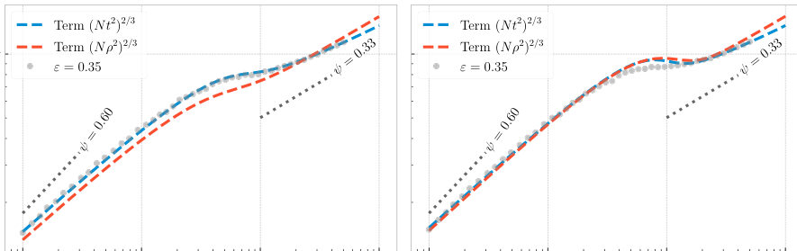
<figcaption class="paper-figure-caption"><b>Fig 1.</b> FIG. 1. Comparison of model predictions with sampled distributions (dots) in medians (left) and in means (right), for the free energy βFε(t) = a1(ε) · Nt + a2(ε) · Nt2 + a3(ε) · (Nt)−q + c ln Nt supplemented by two different surface energy terms: ours (Nt2)2/3 (Equation (56), blue dashed line) and Khokhlov’s (Nρ2)2/3 (red dashed line).</figcaption>
</figure>
<figure class="paper-figure-card">
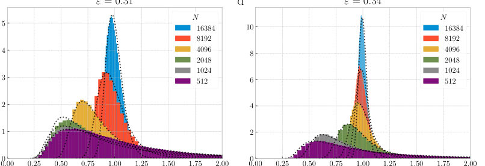
<figcaption class="paper-figure-caption"><b>Fig 2.</b> FIG. 2. Comparison of the agreement between Monte Carlo simulations (histograms) and theory (dotted lines) for different lengths N at different values of ε (a, b, c, d). The distributions are normalized by R2 0, the expectation of the radius of gyration squared.</figcaption>
</figure>
<figure class="paper-figure-card">
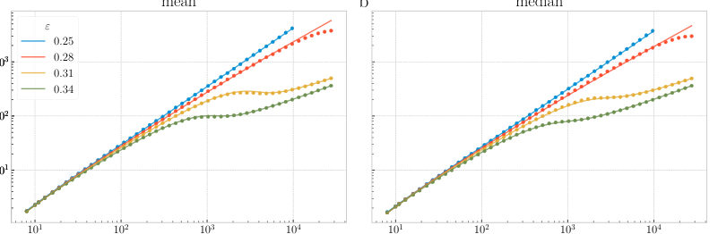
<figcaption class="paper-figure-caption"><b>Fig 3.</b> FIG. 3. Comparison of the agreement between Monte Carlo simulations (dots) and theory (lines) both in mean (a) and in median (b) for different values of ε.</figcaption>
</figure>
<figure class="paper-figure-card">
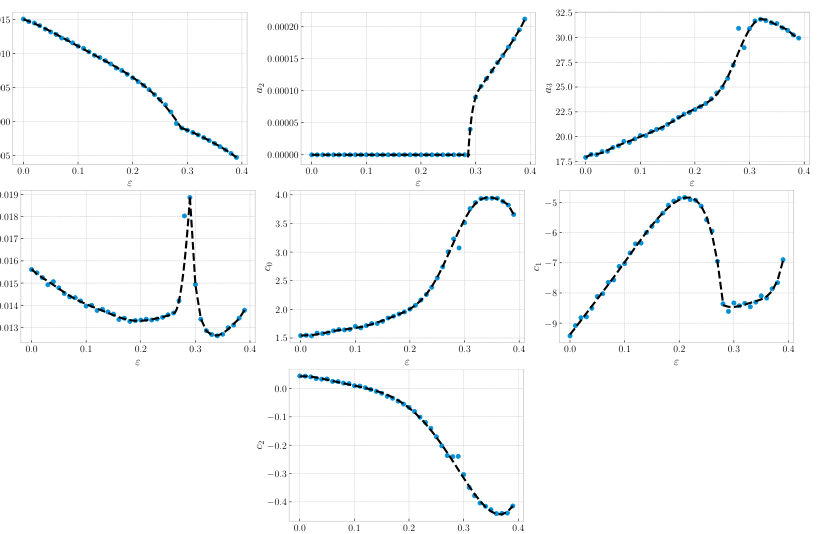
<figcaption class="paper-figure-caption"><b>Fig 4.</b> FIG. 4. Inferred evolution of the free energy parameters a1, a2, a3, a4 and c0, c1, c2 with respect to ε. The dots are the Bayesian fit results, the dashed lines correspond to interpolation functions. These interpolation functions can be reproduced by using the code freely available at https://github.com/antonylsg/model-jupyter.git.</figcaption>
</figure>
<figure class="paper-figure-card">
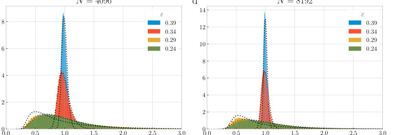
<figcaption class="paper-figure-caption"><b>Fig 5.</b> FIG. 5. Monte Carlo simulations (histograms) and the corresponding theoretical curves (dotted lines) as for Figure 2 but this time for different ε at different values of the lengths N. The distributions are normalized by R2 0, the expectation of the radius of gyration squared.</figcaption>
</figure>
</div>

<p><strong>Summary.</strong> This work develops a theoretical framework to calculate the probability distribution of the radius of gyration for interacting polymer chains (ISAWs). By extending free energy calculations using cumulant expansions, the authors achieve an explicit formula that is validated against detailed Monte Carlo simulations. This allows them to map out the phase diagram governing the coil-globule transition in these polymeric systems.</p>
<p><strong>Why it may be interesting.</strong> While focused on polymer physics, the rigorous application of scaling theories, critical phenomena analysis (coil-globule transition), and advanced statistical mechanics techniques for finite systems provides methodological insights applicable to analyzing complex many-body systems in AMO or quantum field theory contexts.</p>
<details>
<summary>Detailed structure</summary>
<p><strong>Main problem.</strong> To derive an explicit, finite-size probability distribution for the radius of gyration ($R$) of an Interacting Self-Avoiding Walk (ISAW) as a function of chain length and interaction energy.</p>
<p><strong>Main result.</strong> The derived free energy expression shows excellent agreement with extensive Monte Carlo simulations across various regimes, allowing for the construction of a phase diagram for the coil-globule transition.</p>
<p><strong>Method.</strong> The authors extend existing work using a cumulant expansion approach to derive the free energy, which is then compared against numerical simulation results via Bayesian inference.</p>
<p><strong>Model / system.</strong> The system modeled is an Interacting Self-Avoiding Walk (ISAW) on a lattice, representing self-attracting linear homopolymers. The interactions are governed by monomer-monomer contact energy ($\epsilon$).</p>
<p><strong>Key observables.</strong> Radius of gyration ($R$), the probability distribution $P(R\mid \varepsilon, N)$, and the mean radius of gyration $ar{R}$.</p>
<p><strong>Important parameters / regimes.</strong> Chain length ($N$), monomer-monomer interaction energy ($\epsilon$), and the critical temperature/point ($\Theta$-point).</p>
<p><strong>Assumptions / limitations.</strong> The derivation relies on extending free energy calculations from non-interacting SAWs using cumulant expansions, assuming analyticity in certain density variables.</p>
<p><strong>Figures summary.</strong> Figures compare theoretical predictions (inferred free energy parameters) and histograms of $P(R^2|\epsilon, N)$ against Monte Carlo simulation results across different solvent conditions ($\epsilon$) and chain lengths ($N$).</p>
<p><strong>Paper structure.</strong> The paper develops the theory by first establishing the SAW case, then extending it to ISAW using cumulant expansions. The core is the comparison of the resulting free energy expression with extensive MC simulations to validate the model and map out the phase diagram.</p>
</details>
<details>
<summary>Abstract</summary>
<p>We aim at calculating an explicit expression for the finite-size probability distribution of the radius of gyration $R$ of an Interacting Self-Avoiding Walk (ISAW), as a function of chain length $N$ and monomer-monomer interaction energy $\varepsilon$. We first derive the explicit free energy expression for a non-interacting Self-Avoiding Walk, introducing a new natural scale variable $t = ρ^g$ expressed as a power of the density $ρ$. Then, thanks to a cumulant expansion approach introduced by Lhuillier, Victor and coworkers, we extend it to the interacting case, capturing both the coil-globule transition and finite-size corrections to scaling, including entropic and surface-energy contributions. The radius of gyration distribution determined by the new free energy expression is then compared, using Bayesian inference to estimate the model parameters, to results from extensive Monte Carlo simulations of three-dimensional ISAWs, showing excellent agreement except very close to the $Θ$-point, where finite chain lengths limit the accessible scaling regime. This validates our resulting free energy expression and allows us, as an application, to construct a phase diagram of the coil-globule transition.</p>
</details>
<p><sub><a href="#top">↑ back to top</a></sub></p>

<p><a id="paper-2608.07207"></a></p>
<h3 id="existence-of-kraus-decomposition-in-infinite-dimension-via-strongly-convergent-direct-process-tomography"><a href="http://arxiv.org/abs/2608.07207v1">Existence of Kraus decomposition in infinite dimension via strongly-convergent direct process tomography</a></h3>
<p><strong>Authors:</strong> Paul E. Lammert<br>
<strong>Type:</strong> theory · <strong>Category:</strong> quantum information and computing · <strong>PDF:</strong> <a href="https://arxiv.org/pdf/2608.07207v1">https://arxiv.org/pdf/2608.07207v1</a><br>
<strong>Analysis basis:</strong> full PDF text, analyzed in chunks
<strong>Topic relevance:</strong> <code>correlated / nonlocal dissipation</code> <strong>1/5</strong> · <code>driven-dissipative phase transition</code> <strong>1/5</strong> · <code>methods for driven-dissipative</code> <strong>1/5</strong> · <code>quantum measurements</code> <strong>1/5</strong></p>
<div class="figure-strip-hint">↔ Scroll figures horizontally</div>
<div class="paper-figures-scroll">
<figure class="paper-figure-card">
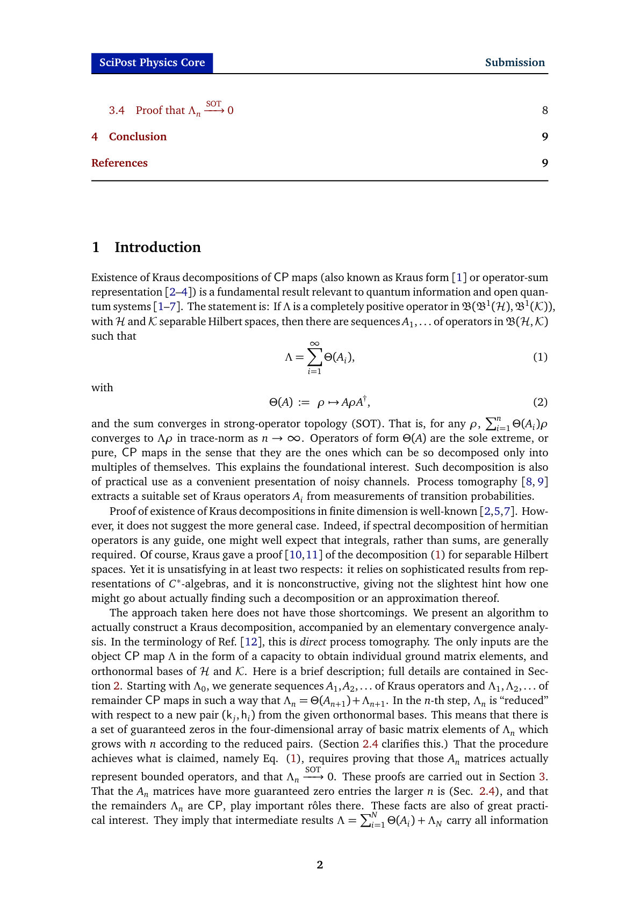
<figcaption class="paper-figure-caption"><b>Fig 1.</b> Low-resolution page preview, page 2</figcaption>
</figure>
<figure class="paper-figure-card">
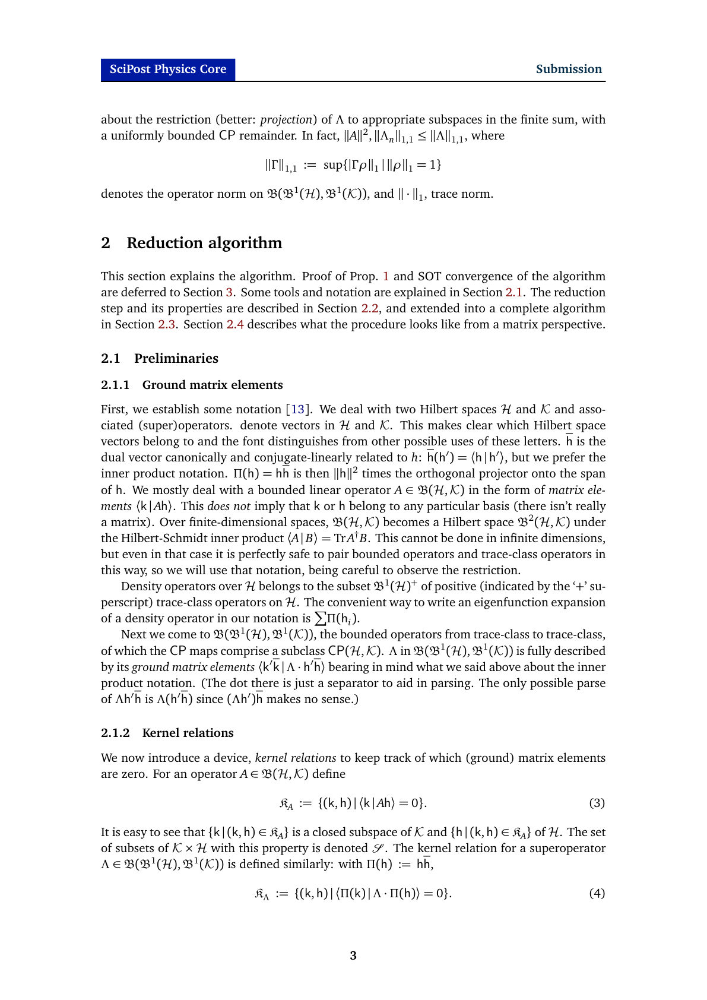
<figcaption class="paper-figure-caption"><b>Fig 2.</b> Low-resolution page preview, page 3</figcaption>
</figure>
<figure class="paper-figure-card">
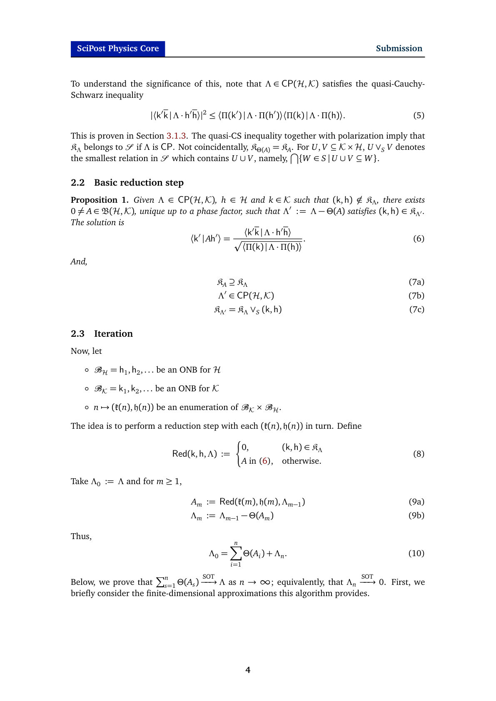
<figcaption class="paper-figure-caption"><b>Fig 3.</b> Low-resolution page preview, page 4</figcaption>
</figure>
<figure class="paper-figure-card">
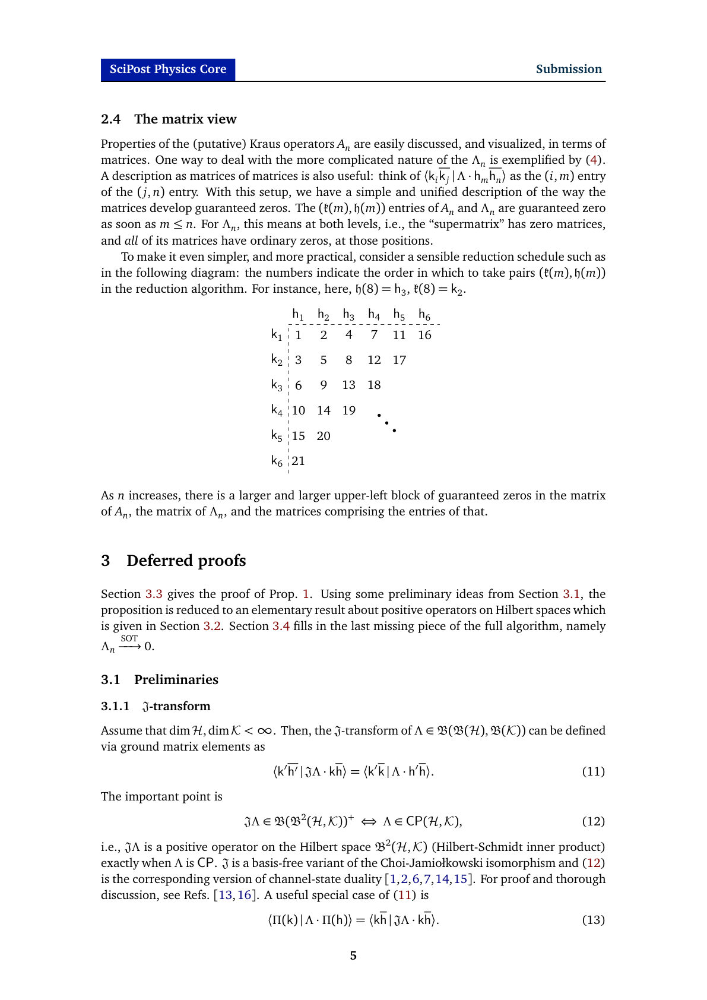
<figcaption class="paper-figure-caption"><b>Fig 4.</b> Low-resolution page preview, page 5</figcaption>
</figure>
<figure class="paper-figure-card">
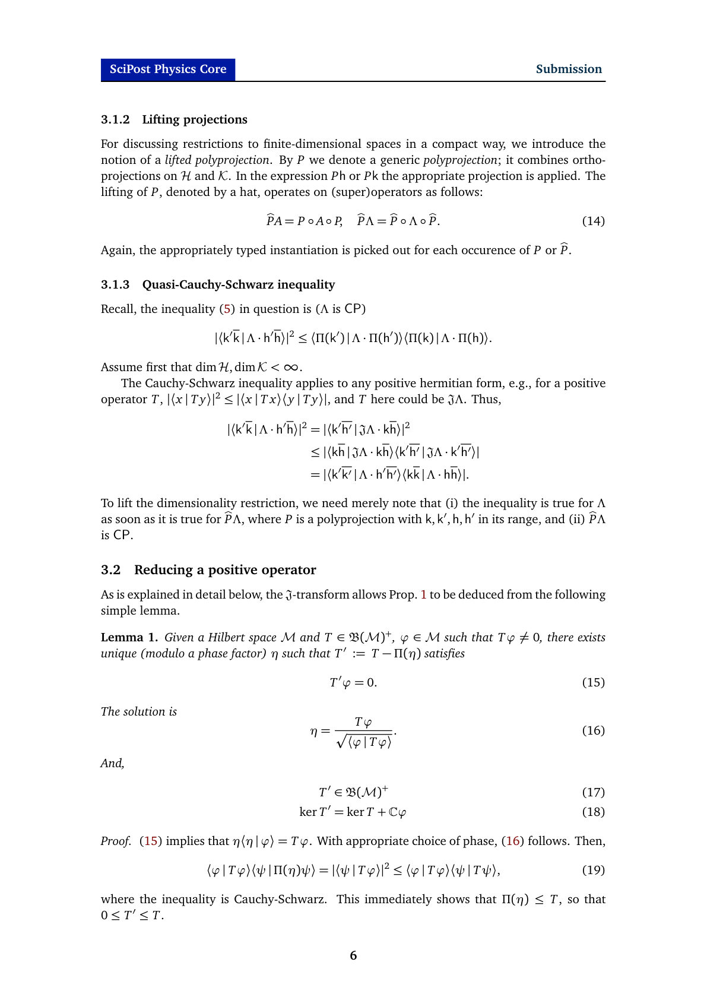
<figcaption class="paper-figure-caption"><b>Fig 5.</b> Low-resolution page preview, page 6</figcaption>
</figure>
</div>

<p><strong>Summary.</strong> This paper introduces a constructive algorithm to find the Kraus decomposition for completely positive maps acting on infinite-dimensional quantum systems. By employing direct process tomography and leveraging strong convergence arguments, it overcomes limitations of previous non-constructive proofs. This provides a powerful, systematic tool for analyzing open quantum evolution in complex physical settings.</p>
<p><strong>Why it may be interesting.</strong> This work provides a rigorous, algorithmic approach to decomposing quantum operations in infinite dimensions, which is crucial for modeling open quantum systems where continuous variables or infinite degrees of freedom are involved.</p>
<details>
<summary>Detailed structure</summary>
<p><strong>Main problem.</strong> The primary goal is to develop a constructive algorithm for finding the Kraus decomposition of a completely positive (CP) operator acting on separable, countably-infinite-dimensional Hilbert spaces.</p>
<p><strong>Main result.</strong> The authors present an elementary and practical algorithm that successfully constructs the Kraus operators and proves that their sum converges in the strong-operator topology (SOT).</p>
<p><strong>Method.</strong> The method combines direct process tomography with iterative reduction steps, systematically generating Kraus operators one by one while ensuring convergence properties.</p>
<p><strong>Model / system.</strong> The system involves quantum channels or CP maps ($\Lambda$) acting between separable Hilbert spaces ($H$ and $K$). The decomposition seeks to express $\Lambda$ as a sum of processes generated by Kraus operators: $\Lambda = \sum_{i=1}^{\infty} \Theta(A_i)$.</p>
<p><strong>Key observables.</strong> The CP map ($\Lambda$), the resulting Kraus operators ($A_i$), and the convergence of the partial sums in SOT.</p>
<p><strong>Important parameters / regimes.</strong> Separable (countably-infinite-dimensional) Hilbert spaces, orthonormal bases for $H$ and $K$.</p>
<p><strong>Assumptions / limitations.</strong> The proof relies on extending finite-dimensional results using density arguments involving nested projections ($P_\sigma$) and convergence in the trace norm ($\|\cdot\|_{1,1}$).</p>
<p><strong>Paper structure.</strong> The paper builds from establishing necessary tools (like the quasi-Cauchy-Schwarz inequality) to first solve the problem for finite dimensions before extending the constructive algorithm and proof of convergence to the infinite-dimensional case.</p>
</details>
<details>
<summary>Abstract</summary>
<p>An algorithm is presented for Kraus decomposition of a completely positive operator over separable (countably-infinite-dimensional) Hilbert spaces, together with an elementary proof that the generated sum convergences in strong-operator topology. This improves on the standard, nonconstructive, proof by fusing the abstract problem with practical process tomography. Kraus operators are generated one-by-one, each having one more guaranteed zero matrix entry than the previous one. In this way, the stream of outputs of the algorithm provides a coherent family of Kraus decompositions of restrictions of the target CP map to ever-larger subspaces.</p>
</details>
<p><sub><a href="#top">↑ back to top</a></sub></p>

<p><a id="paper-2608.07412"></a></p>
<h3 id="analytic-spread-complexity-from-level-statistics-from-chaos-to-integrability"><a href="http://arxiv.org/abs/2608.07412v1">Analytic Spread Complexity from Level Statistics: From Chaos to Integrability</a></h3>
<p><strong>Authors:</strong> Pallab Basu, Suman das, Bigboy Madlala<br>
<strong>Type:</strong> theory · <strong>Category:</strong> statistical mechanics · <strong>PDF:</strong> <a href="https://arxiv.org/pdf/2608.07412v1">https://arxiv.org/pdf/2608.07412v1</a><br>
<strong>Analysis basis:</strong> full PDF text, analyzed in chunks
<strong>Topic relevance:</strong> <code>analog quantum simulation</code> <strong>1/5</strong> · <code>entanglement &amp; information structure</code> <strong>1/5</strong> · <code>non-equilibrium dynamics</code> <strong>1/5</strong></p>
<div class="figure-strip-hint">↔ Scroll figures horizontally</div>
<div class="paper-figures-scroll">
<figure class="paper-figure-card">
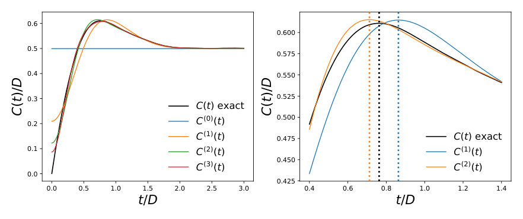
<figcaption class="paper-figure-caption"><b>Fig 1.</b> Figure 1. Comparison of the exact spread complexity C(t) with the successive approx- imations C(0)(t) = C0, C(1)(t), C(2)(t), and C(3)(t). The left panel shows the full time evolution, while the right panel provides an enlarged view of the region around the max- imum; the vertical dashed lines indicate the corresponding peak positions. The figure demonstrates that the exact complexity is accurately reproduced by retaining only the first few diagonals of the Krylov kernel.</figcaption>
</figure>
<figure class="paper-figure-card">
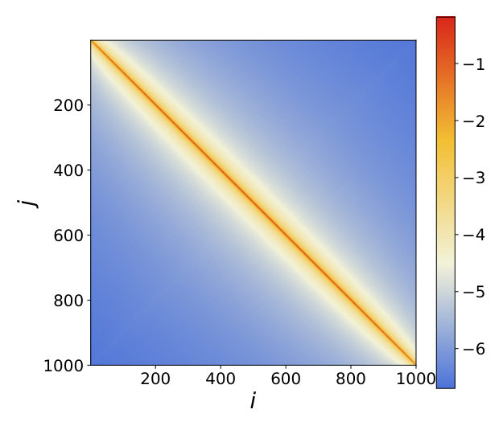
<figcaption class="paper-figure-caption"><b>Fig 2.</b> Figure 2. Heat map of the Krylov kernel K(i, j). The colour scale represents log10(⟨|K(i, j)|⟩), where the ensemble average is taken over 50 realizations. The logarith- mic scale is used to enhance the visibility of the off-diagonal structure. The figure clearly illustrates the approximately banded nature of the kernel, with the magnitude of its matrix elements decreasing as one moves away from the principal diagonal. Although an ensemble average is shown here, the same qualitative behaviour is observed for individual realiza- tions.</figcaption>
</figure>
<figure class="paper-figure-card">
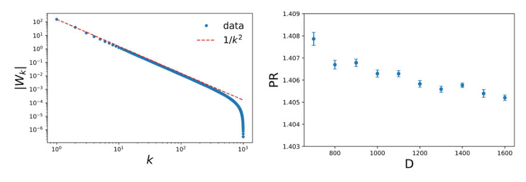
<figcaption class="paper-figure-caption"><b>Fig 3.</b> Figure 3. Left: the integrated off-diagonal weight |Wk|, eq. (3.1), versus k on a log–log scale, showing an approximate 1/k2 decay and confirming the banded structure of the kernel. Right: the disorder-averaged participation ratio PR versus D.</figcaption>
</figure>
<figure class="paper-figure-card">
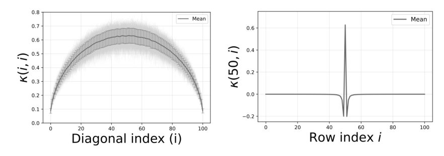
<figcaption class="paper-figure-caption"><b>Fig 4.</b> Figure 4. Diagonal and row-wise profiles of the kernel K(i, j) computed from a single raw GUE spectrum of dimension D = 101. Left: the main diagonal K(i, i), showing an approximately semicircular envelope together with realization-specific fluctuations. Right: the middle row K  (D −1)/2, i  , which remains essentially zero except for a single sharp feature near i ≃D/2, where the row crosses the main diagonal. This confirms that K is strongly peaked near i = j and decays rapidly away from it.</figcaption>
</figure>
<figure class="paper-figure-card">
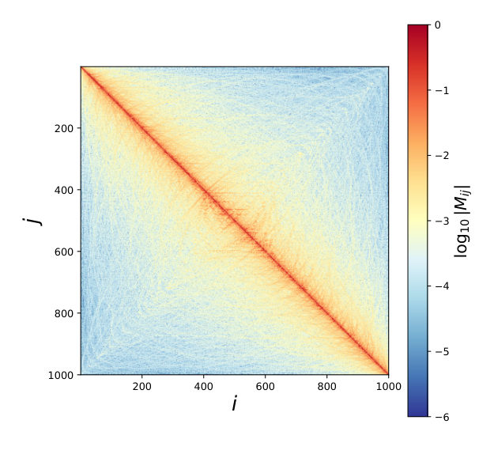
<figcaption class="paper-figure-caption"><b>Fig 5.</b> Figure 5. Heat map of log10 |Mij| for the overlap matrix M = OunfoldOT uni at D = 1000, shown on a six-decade diverging color scale. The matrix is sharply concentrated along the principal diagonal, where |Mij| ∼1, and decays by several orders of magnitude within a narrow band around it, indicating that the transformation between the uniform-lattice and unfolded polynomial-evaluation matrices is approximately local in the ordered spectral index.</figcaption>
</figure>
</div>

<p><strong>Summary.</strong> This theoretical work develops an analytic framework to understand 'spread complexity,' a measure used to probe quantum chaos. By analyzing the structure of the Krylov kernel in energy space, the authors derive a formula linking this complexity directly to the Fourier transforms of nearest-neighbor level spacing distributions. This successfully explains the spectral origin of the characteristic peak observed in chaotic systems while correctly predicting the monotonic behavior in integrable limits.</p>
<p><strong>Why it may be interesting.</strong> The connection drawn between dynamical measures like complexity and fundamental spectral statistics provides deep insight into quantum chaos, which is relevant for understanding energy level spacing in complex quantum systems studied in AMO physics.</p>
<details>
<summary>Detailed structure</summary>
<p><strong>Main problem.</strong> The paper aims to resolve the microscopic spectral origin of the characteristic finite-time peak observed in 'spread complexity,' a key diagnostic tool for quantum chaos.</p>
<p><strong>Main result.</strong> It derives an analytic expression for spread complexity based on local spectral statistics, successfully describing both chaotic random-matrix ensembles and the integrable Poisson limit. This framework directly connects Krylov dynamics to spectral properties.</p>
<p><strong>Method.</strong> The authors develop an analytic framework by analyzing the energy-space representation of the Krylov kernel, exploiting its approximate banded structure to relate complexity to Fourier transforms of nearest-neighbor spacing distributions.</p>
<p><strong>Model / system.</strong> The analysis concerns time evolution governed by a time-independent Hermitian Hamiltonian H on a quantum many-body system. The core mathematical tool is the Krylov kernel derived from this energy spectrum.</p>
<p><strong>Key observables.</strong> Spread complexity, $C(t)$; finite-time peak structure; local spectral statistics (nearest-neighbor spacing distributions).</p>
<p><strong>Important parameters / regimes.</strong> The analysis considers regimes ranging from chaotic random-matrix ensembles to the integrable Poisson limit. The large-$D$ limit is frequently employed.</p>
<p><strong>Assumptions / limitations.</strong> Key assumptions include the approximate banded nature of the Krylov kernel and utilizing an 'approximate kernel-universality hypothesis' relating it to a uniform lattice.</p>
<p><strong>Figures summary.</strong> Figures illustrate the convergence of complexity approximations using successive diagonals of the kernel, comparing exact results against truncated series expansions for both chaotic and Poisson regimes.</p>
<p><strong>Paper structure.</strong> The paper progresses by first establishing the energy-space representation of spread complexity; it then uses the banded structure to derive a master formula linking complexity to spectral statistics; finally, it applies this framework to analyze known limits (chaotic vs. integrable) to pinpoint the origin of the peak.</p>
</details>
<details>
<summary>Abstract</summary>
<p>Spread complexity has emerged as a useful probe of quantum chaos, yet the microscopic spectral origin of its characteristic finite-time peak remains incompletely understood. We develop an analytic framework that relates spread complexity directly to local spectral statistics. Starting from an energy-space representation of the Krylov kernel, we show that the kernel is approximately banded, leading to a rapidly convergent diagonal expansion dominated by nearby levels in the ordered spectrum. Motivated by this structure, we propose an approximate kernel-universality hypothesis: after unfolding, the Krylov kernel is well approximated by that of a uniform lattice. Combining this universal kernel with local spectral statistics yields a simple analytic expression for spread complexity in terms of the Fourier transforms of the $k$-th nearest-neighbour spacing distributions. In particular, at leading order, the finite-time peak is controlled by the Fourier transform of the nearest-neighbour spacing distribution. The resulting framework describes both chaotic random-matrix ensembles and the integrable Poisson limit, identifies the spectral origin of the complexity peak and its late-time behaviour, and provides a direct connection between Krylov dynamics and spectral statistics.</p>
</details>
<p><sub><a href="#top">↑ back to top</a></sub></p>

<p><a id="paper-2608.07238"></a></p>
<h3 id="emergent-magnetic-pseudogap-from-phase-fluctuations-and-hierarchy-of-scales-in-two-dimensional-superconductors"><a href="http://arxiv.org/abs/2608.07238v1">Emergent magnetic pseudogap from phase fluctuations and hierarchy of scales in two-dimensional superconductors</a></h3>
<p><strong>Authors:</strong> Xu-Cheng Wang, Yang Qi<br>
<strong>Type:</strong> theory · <strong>Category:</strong> strongly correlated electrons · <strong>PDF:</strong> <a href="https://arxiv.org/pdf/2608.07238v1">https://arxiv.org/pdf/2608.07238v1</a><br>
<strong>Analysis basis:</strong> full PDF text, analyzed in chunks
<strong>Topic relevance:</strong> <code>Keldysh / 2PI / non-Gaussian methods</code> <strong>1/5</strong> · <code>correlated / nonlocal dissipation</code> <strong>1/5</strong> · <code>driven-dissipative phase transition</code> <strong>1/5</strong></p>
<div class="figure-strip-hint">↔ Scroll figures horizontally</div>
<div class="paper-figures-scroll">
<figure class="paper-figure-card">
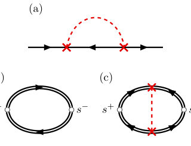
<figcaption class="paper-figure-caption"><b>Fig 1.</b> FIG. 1. (a) Leading-order correction to the electronic Green’s function, from which the self-energy Eq. (3) is deduced. The red dashed line denotes the average over fluctuating pair- ing correlations. (b) Bubble graph to the spin susceptibil- ity χ−+(q, iωn). The doubled line represents the interacting Green’s function G−1 = [G(0)]−1 −Σ. (c) Leading-order ver- tex correction to χ−+(q, iωn).</figcaption>
</figure>
<figure class="paper-figure-card">
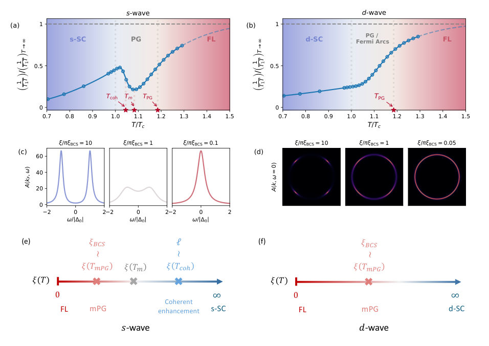
<figcaption class="paper-figure-caption"><b>Fig 2.</b> FIG. 2. (a)(b) Spin-lattice relaxation rate 1/T1T with respect to temperature T, including bubble-graph contribution and leading-order vertex correction. The correlation length is given by the BKT relation ξ(T) = ξ0 exp(bt−1/2 r ) in the normal state, and set to infinity for T below Tc. Parameters are taken as follows: m = 1, kF = 2.2, βc = 7.75, ∆0 = 0.6, Γ0 = 0.1, b = 1.4, ξ0 = 0.1. The emergent scale of magnetic pseudogap ξ(TmPG) is marked out. For an s-wave system, the scales of coherent enhancement ξ(Tcoh) and 1/T1T dip ξ(Tm) are additionally identified. (c)(d) Evolution of (c) charge pseudogap and (d) Fermi arcs in d-wave system as a competition of ξ and ξBCS = vF /π|∆0|. (e)(f)...</figcaption>
</figure>
<figure class="paper-figure-card">
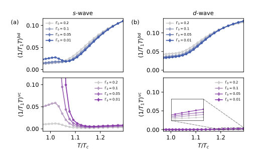
<figcaption class="paper-figure-caption"><b>Fig 3.</b> FIG. 3. Bubble-graph contribution (1/T1T)bd and leading- order vertex correction (1/T1T)vc with respect to temperature T for (a) s-wave and (b) d-wave systems. The specific model parameters are identical to those adopted in Fig. 2, except that the background scattering strength Γ0 is varied.</figcaption>
</figure>
<figure class="paper-figure-card">
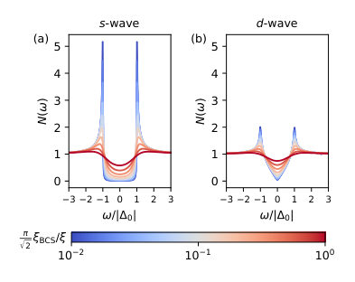
<figcaption class="paper-figure-caption"><b>Fig 4.</b> FIG. 6. Local density of states N(ω) = P</figcaption>
</figure>
<figure class="paper-figure-card">
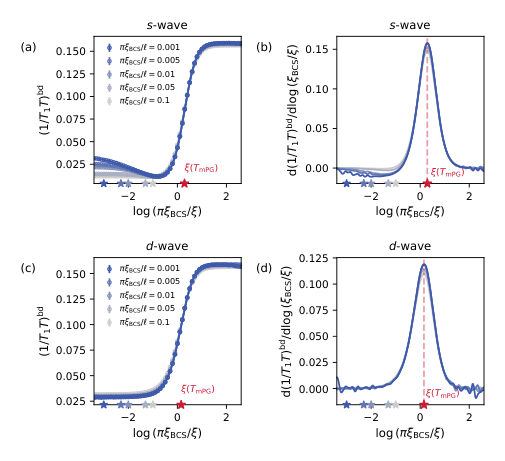
<figcaption class="paper-figure-caption"><b>Fig 5.</b> FIG. 4. (a)(c) Bubble-graph contribution (1/T1T)bd with re- spect to the BKT correlation length ξ. We have set EF = 2, ∆0/EF = 1/4, β|∆0| = 5, and vF = 2. (b)(d) Derivatives of (1/T1T)bd in (a)(c) with respect to log(ξBCS/ξ). ξ(TmPG) is identified by locating the maximum of the derivative. We also mark the varying πξBCS/ℓon the axis for comparison.</figcaption>
</figure>
</div>

<p><strong>Summary.</strong> This work theoretically predicts an emergent magnetic pseudogap in 2D superconductors arising purely from phase fluctuations. By analyzing the NMR relaxation rate (1/T1T), the authors show that the full temperature dependence is governed by a hierarchy of competing length scales: BKT correlations, BCS coherence, and background scattering. This provides a unified theoretical framework for understanding normal-state superconducting signatures.</p>
<p><strong>Why it may be interesting.</strong> The detailed analysis of spectral function divergences (like the Hebel-Slichter peak) and their regularization via scattering lengths provides a rich theoretical playground for understanding how quantum fluctuations modify fundamental superconducting signatures, relevant to strongly correlated systems.</p>
<details>
<summary>Detailed structure</summary>
<p><strong>Main problem.</strong> To theoretically identify an emergent magnetic pseudogap in two-dimensional superconductors arising purely from phase fluctuations, independent of invoking competing ordered states.</p>
<p><strong>Main result.</strong> The paper establishes a unified picture where the normal-state spin relaxation rate (1/T1T) evolves based on the interplay between three characteristic length scales: the BKT correlation length ($\xi(T)$), the BCS coherence length ($\xi_{BCS}$), and an external scattering length ($\ell$).</p>
<p><strong>Method.</strong> The analysis uses perturbation theory applied to the NMR relaxation rate (1/T1T), calculating contributions from both bubble diagrams and leading-order vertex corrections.</p>
<p><strong>Model / system.</strong> The study focuses on 2D superconductors, modeled phenomenologically with a Hamiltonian incorporating spatially fluctuating superconducting order parameters ($\Delta(r, s)$). Comparisons are made between d-wave and s-wave pairing symmetries.</p>
<p><strong>Key observables.</strong> NMR relaxation rate (1/T1T), charge pseudogap scale, magnetic pseudogap scale ($T_{mPG}$), and the coherence enhancement peak near $T_c$.</p>
<p><strong>Important parameters / regimes.</strong> BKT correlation length $\xi(T)$, BCS coherence length $\xi_{BCS}$, background scattering length $\ell$, superconducting gap ($\Delta_{SC}$), and transition temperature ($T_c$).</p>
<p><strong>Assumptions / limitations.</strong> The analysis assumes the validity of treating static phase fluctuations near the BKT point, allowing for a perturbative expansion in terms of weak pairing.</p>
<p><strong>Figures summary.</strong> Figures illustrate how characteristic scales like $\xi(T_{mPG})$ and $\xi(T_{coh})$ are determined by analyzing the derivatives or maxima of the calculated 1/T1T contributions with respect to varying length scale ratios.</p>
<p><strong>Paper structure.</strong> The paper develops a theoretical framework for phase fluctuations, calculates the leading-order corrections to $1/T_1T$ (bubble and vertex), distinguishes behavior between d-wave and s-wave systems, and finally unifies these results by showing how all scales ($\xi(T)$, $\xi_{BCS}$, $\ell$) govern the full temperature evolution of $1/T_1T$.</p>
</details>
<details>
<summary>Abstract</summary>
<p>Preformed pairs and phase fluctuations are believed to play a vital role in predicting the charge pseudogap in the normal state of two-dimensional superconductors. In this work, we extend this idea and further identify the emergent magnetic pseudogap from pure phase fluctuations without invoking any competing order. We examine the NMR relaxation rate $1/T_1T$ by evaluating the bubble contribution and leading-order vertex correction within perturbation theory. It is found that the magnetic pseudogap, manifesting as a smooth suppression of $1/T_1T$ in the normal state, is characterized by a temperature scale $T_\text{mPG}$ distinct from the superconducting gap $Δ_\text{SC}$ and transition temperature $T_c$. The onset scales of both charge and magnetic pseudogap are dominated by the competition of BKT correlation length $ξ(T)$ and BCS coherence length $ξ_\text{BCS}$. Moreover, the vertex correction is shown to be irrelevant for $d$-wave pairing, while it becomes prominent in $s$-wave systems and drives a coherent enhancement of $1/T_1T$ at lower temperatures just above $T_c$. We attribute this normal-state enhancement of $1/T_1T$ to the diverging coherence peak at the $s$-wave superconducting gap edge, which shares the same spirit as the celebrated Hebel-Slichter peak in the BCS theory. Analogous to the coherent Hebel-Slichter peak, regularization by Fermi-liquid-like scatterings is important and is characterized by a scattering length $\ell$. The normal-state coherent enhancement of $1/T_1T$ is hence described by the competition of $ξ(T)$ and $\ell$, through which the coherence scale $T_\text{coh}$ is determined. As a result, the complete evolution of $1/T_1T$ is understood quantitatively in a unified picture as the interplay among hierarchy of scales $ξ(T)$, $ξ_\text{BCS}$ and $\ell$.</p>
</details>
<p><sub><a href="#top">↑ back to top</a></sub></p>

<p><a id="paper-2608.06515"></a></p>
<h3 id="quantum-computers-will-constrain-the-equation-of-state-of-neutron-stars"><a href="http://arxiv.org/abs/2608.06515v1">Quantum Computers will constrain the Equation of State of Neutron Stars</a></h3>
<p><strong>Authors:</strong> Adrián Castaño-García, Nahia J. Dios-Bilbao, J. J. Gálvez-Viruet, Felipe J. Llanes-Estrada, Marío Logrosán-Álvarez, Nicolás M. Arenaza, María Gómez-Rocha<br>
<strong>Type:</strong> theory · <strong>Category:</strong> other · <strong>PDF:</strong> <a href="https://arxiv.org/pdf/2608.06515v1">https://arxiv.org/pdf/2608.06515v1</a><br>
<strong>Analysis basis:</strong> full PDF text, analyzed in chunks
<strong>Topic relevance:</strong> <code>Keldysh / 2PI / non-Gaussian methods</code> <strong>1/5</strong> · <code>analog quantum simulation</code> <strong>1/5</strong> · <code>methods for driven-dissipative</code> <strong>1/5</strong></p>
<div class="figure-strip-hint">↔ Scroll figures horizontally</div>
<div class="paper-figures-scroll">
<figure class="paper-figure-card">
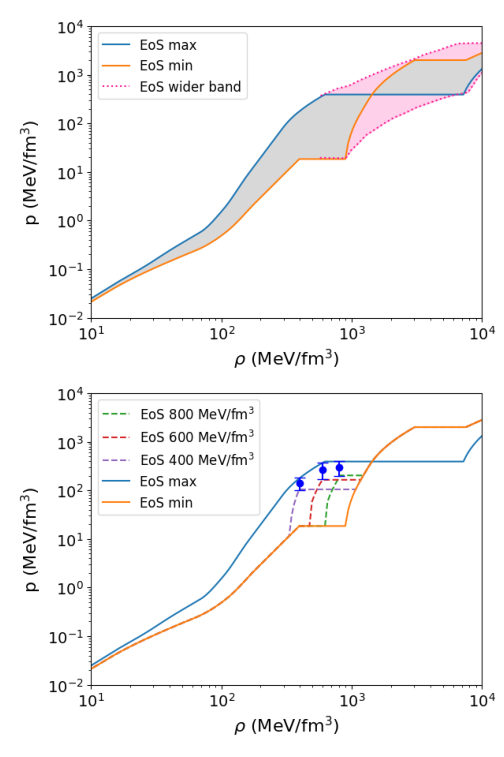
<figcaption class="paper-figure-caption"><b>Fig 1.</b> FIG. 1. Top panel: Uncertainty band for the EoS P(ρ). EoS min/max are the lower/upper bounds (below an even- tual first order phase transition) while respecting stability (cs ≥0)/causality (cs ≤1) once microscopic physics has been accounted , at both low and high ρ. Bottom: Eventual improvement of the EoS to narrow the current band, which quantum computer investigations should aim to achieve.</figcaption>
</figure>
<figure class="paper-figure-card">
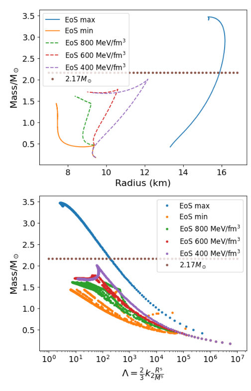
<figcaption class="paper-figure-caption"><b>Fig 2.</b> FIG. 2. Top panel: Mass (in solar masses) against neutron- star radius. Bottom: Mass against Tidal deformability. The extreme lines show the current prediction of these observables excluding astrophysical constraints, from microscopic theory alone. The intermediate lines, from the left bottom corner towards the right and up, represent the improved predictions if one (ρ, P) point is calculated at the densities marked in the bottom plot of Fig. 1 (note that their uncertainty bands are anchored at the stiffest EoS, so they lift the softest one).</figcaption>
</figure>
<figure class="paper-figure-card">
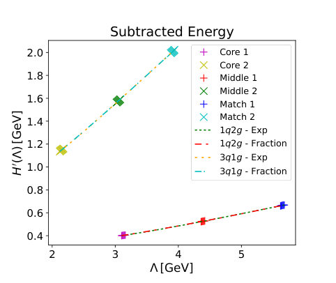
<figcaption class="paper-figure-caption"><b>Fig 3.</b> FIG. 3. Energies obtained after applying Eq. (67) to the mini- mum of the expectation value of the Hamiltonian constrained by Gauss’ law. We see no sensitivity to changing the fitting procedure, “Exp” denoting an exponential function fit, see Eq. (72) and “Fraction” a fit with a fraction of polynomi- als, see Eq. (73). We do see strong sensitivity to the trial variational wavefunction. This is expected, and a working large-scale quantum computer, with its massive Hilbert space, would be the tool to address it.</figcaption>
</figure>
<figure class="paper-figure-card">
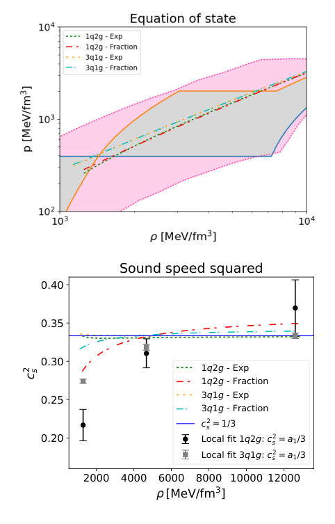
<figcaption class="paper-figure-caption"><b>Fig 4.</b> FIG. 4. Pressure and sound velocity squared as functions of the energy density, obtained from the minimum of the time- axial QCD Hamiltonian expectation value evaluated with the variational wavefunction described in Sec. IV A 1 and IV A 2, and after applying Eq. (67).</figcaption>
</figure>
<figure class="paper-figure-card">
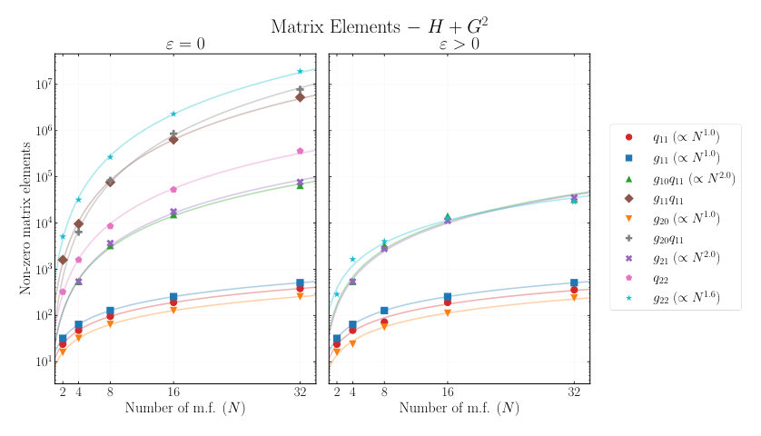
<figcaption class="paper-figure-caption"><b>Fig 5.</b> FIG. 5. Left: number of non-vanishing matrix elements for the combined operator H + G2 associated to each interaction term against the number of momentum fractions (momentum grid size). Right: remaining ones after applying a cutoff ε given by (74) setting those too small and compatible with noise to be exactly zero. The legend includes selected monomial fits for the scaling of each interaction term with the number of modes after applying the cutoff ε.</figcaption>
</figure>
</div>

<p><strong>Summary.</strong> This paper outlines a quantum computing approach to solve the intractable problem of determining the Equation of State (EoS) for matter inside neutron stars. By developing a theoretical framework based on QCD Hamiltonian simulation, they show how future quantum computers could drastically reduce uncertainties in key astrophysical observables like stellar radius and tidal deformability. This bridges high-energy nuclear theory with advanced quantum computation techniques.</p>
<p><strong>Why it may be interesting.</strong> While focused on nuclear astrophysics, the core methodology involves mapping a complex field theory Hamiltonian onto a qubit register for variational energy minimization, which is highly relevant to simulating strongly correlated many-body systems in general.</p>
<details>
<summary>Detailed structure</summary>
<p><strong>Main problem.</strong> The primary challenge is determining the Equation of State (EoS) for ultra-dense nuclear matter, specifically within neutron stars, which is intractable using standard Lattice QCD due to the sign problem.</p>
<p><strong>Main result.</strong> The authors propose that future quantum computers can constrain the EoS by simulating QCD at finite chemical potential, leading to significantly reduced uncertainties in key observables like radius and tidal deformability.</p>
<p><strong>Method.</strong> They develop a theoretical framework for solving the canonical Hamiltonian of QCD in Weyl gauge on a quantum computer architecture, using variational minimization techniques.</p>
<p><strong>Model / system.</strong> The system is Quantum Chromodynamics (QCD) applied to neutron star cores. The theory focuses on developing the Hamiltonian formalism and encoding quark-gluon states onto qubit registers for simulation.</p>
<p><strong>Key observables.</strong> Static observables of neutron stars: mass, radius ($R$), and Tidal deformability ($\Lambda$). Derived quantities include energy density ($
ho$) and pressure ($p$).</p>
<p><strong>Important parameters / regimes.</strong> High densities (intermediate regimes) where classical QCD fails; the coupling constant $g$; specific quark/gluon configurations (e.g., 3 quarks, 1 gluon).</p>
<p><strong>Assumptions / limitations.</strong> The work is a proof-of-concept demonstration limited to small particle numbers (e.g., three quarks and one gluon) due to current computational constraints.</p>
<p><strong>Figures summary.</strong> Figures illustrate the narrowing of uncertainty bands for EoS observables when constrained by quantum computation, comparing theoretical predictions with existing bounds.</p>
<p><strong>Paper structure.</strong> The paper progresses from identifying the physical problem (EoS difficulty) to developing the necessary Hamiltonian theory in canonical gauge, detailing the quantum encoding and minimization procedure, and finally demonstrating the method via simulation results.</p>
</details>
<details>
<summary>Abstract</summary>
<p>The Equation of State (EoS) of Nuclear Matter at high densities, and particularly that of neutron stars, resists $\mathit{ab}$ $\mathit{initio}$ Quantum Chromodynamics (QCD) computations due to the notorious sign problem of Lattice Gauge Theory at finite chemical potential. A quantum computer deploying QCD in canonical quantization should be able to make substantial progress. We set some basic goals for a future quantum computer to predict the EoS, and thus the basic static observables of the star (mass, radius and Tidal deformability, for example). We then develop the basic theory to address the canonical Hamiltonian in Weyl (time-axial) gauge expressed in normal modes, together with the squared Gauss operator $\mathcal{G}^2$ necessary to execute energy minimization algorithms restricted to the physical Fock subspace. Finally, we deploy our particle-quantum register encoding of a generic field theory to demonstrate QCD at finite chemical potential for a few (three-four) particles with a modest number of momentum modes, by simulating the quantum computer on a classical cluster. This opens the possibility for effective quantum computers to constrain the microscopic physics of neutron stars simultaneously to the operation of third--generation gravitational wave detectors such as the Einstein Telescope, providing more detailed predictions than has been possible until now.</p>
</details>
<p><sub><a href="#top">↑ back to top</a></sub></p>

<p><a id="paper-2608.07428"></a></p>
<h3 id="qmimo-circuit-based-quantum-mimo-design-with-variational-receiver"><a href="http://arxiv.org/abs/2608.07428v1">QMIMO: Circuit Based Quantum MIMO Design with Variational Receiver</a></h3>
<p><strong>Authors:</strong> Sayeda Bipanchi Ahmed, Bikash K. Behera, Mandar Thatte, Prasanta K. Panigrahi<br>
<strong>Type:</strong> theory · <strong>Category:</strong> quantum information and computing · <strong>PDF:</strong> <a href="https://arxiv.org/pdf/2608.07428v1">https://arxiv.org/pdf/2608.07428v1</a><br>
<strong>Analysis basis:</strong> full PDF text, analyzed in chunks
<strong>Topic relevance:</strong> <code>entanglement &amp; information structure</code> <strong>1/5</strong> · <code>methods for driven-dissipative</code> <strong>1/5</strong></p>
<div class="figure-strip-hint">↔ Scroll figures horizontally</div>
<div class="paper-figures-scroll">
<figure class="paper-figure-card">

<figcaption class="paper-figure-caption"><b>Fig 1.</b> FIG. 1: Circuit representation of the proposed quantum MIMO channel for an n = 4-qubit system. The channel consists of Hadamard layers, nearest-neighbor entangling operations, and pairwise RY Y (θij) interactions.</figcaption>
</figure>
<figure class="paper-figure-card">

<figcaption class="paper-figure-caption"><b>Fig 2.</b> FIG. 2: Hybrid quantum–classical architecture for the proposed n × n quantum MIMO communication system. Classical information is encoded into multi-qubit basis states and transmitted through a parameterized entangling quantum channel with pairwise RY Y (Θ) interactions. A variational quantum receiver performs adaptive quantum decoding under a realistic NISQ noise environment modeled using a CPTP map incorporating thermal relaxation, depolarizing gate errors, and readout noise.The reconstructed bitstrings are used to evaluate BER and mutual information, while variational parameters are iteratively optimized using ADAM, SPSA, or COBYLA.</figcaption>
</figure>
<figure class="paper-figure-card">

<figcaption class="paper-figure-caption"><b>Fig 3.</b> FIG. 3: Comparison between numerical BER obtained from noisy quantum simulations and the analytical scaling model for different noise strengths. (a) p = 0.01, (b) p = 0.02, (c) p = 0.03, and (d) p = 0.05.</figcaption>
</figure>
<figure class="paper-figure-card">

<figcaption class="paper-figure-caption"><b>Fig 4.</b> FIG. 4: Quantitative validation of the proposed BER scaling law. (a) Transformed BER quantity log(1 −2BER) as a function of n2 for noise strengths b) Extracted scaling coefficient as a function of p</figcaption>
</figure>
<figure class="paper-figure-card">

<figcaption class="paper-figure-caption"><b>Fig 5.</b> Figure 4 further shows that the extracted scal- ing coefficient increases approximately linearly with noise strength. The corresponding fit yields a high coefficient of determination (R2 = 0.9959), indi- cating a strong and systematic dependence on p. This near-linear behavior suggests that, within the investigated parameter regime, the dominant ef- fect of noise is to introduce approximately indepen- dent fidelity losses at each interaction layer. Un- der such conditions, the total degradation accumu- lates proportionally to the physical noise strength, leading to a scaling coefficient that grows linearly with p. The absence of significant nonlinear correc- tions further indicates that the...</figcaption>
</figure>
</div>

<p><strong>Summary.</strong> This work develops a hybrid framework for Quantum MIMO communication by modeling the channel with parameterized unitary transformations. It introduces a Variational Quantum Circuit receiver trained to decode transmitted information under realistic noise. The findings suggest VQCs provide robust performance stability in complex, strongly coupled quantum channels.</p>
<p><strong>Why it may be interesting.</strong> It provides a concrete, trainable quantum circuit approach (VQC) to solve an information processing task (MIMO equalization) that is highly relevant for near-term quantum hardware applications and understanding resource scaling.</p>
<details>
<summary>Detailed structure</summary>
<p><strong>Main problem.</strong> The paper investigates a quantum extension of classical Multiple-Input Multiple-Output (MIMO) communication, replacing linear channels with parameterized multi-qubit unitary transformations.</p>
<p><strong>Main result.</strong> Variational Quantum Circuits (VQC) offer increased performance stability compared to classical detectors when channel complexity and interference are high, suggesting they are complementary rather than direct replacements.</p>
<p><strong>Method.</strong> A Variational Quantum Circuit receiver is trained via supervised variational optimization to approximate the inverse quantum channel transformation under realistic noisy conditions.</p>
<p><strong>Model / system.</strong> The system models quantum MIMO communication using an n-qubit Hilbert space where interference arises from coherent unitary evolution, $U_{ch}(\Theta)$.</p>
<p><strong>Key observables.</strong> Bit-error rates (BER), Mutual Information, and resource requirements growth trends.</p>
<p><strong>Important parameters / regimes.</strong> NISQ noise parameters (depolarizing noise, thermal relaxation) and system dimension ($n$).</p>
<p><strong>Assumptions / limitations.</strong> The analysis is performed under realistic CPTP noise modeling in quantum simulations; no claim of asymptotic advantage is made.</p>
<p><strong>Figures summary.</strong> Figure 1 illustrates the circuit representation of the proposed quantum MIMO channel for $n=4$, involving Hadamard layers and nearest-neighbor entangling operations.</p>
<p><strong>Paper structure.</strong> The paper establishes the problem gap by noting previous work focused on capacity limits, then details the hybrid framework combining parameterized unitary channels with VQC equalization, followed by performance evaluation under noise.</p>
</details>
<details>
<summary>Abstract</summary>
<p>This paper investigates a quantum extension of classical Multiple-Input Multiple-Output (MIMO) communication in which the conventional linear channel model is replaced by a parameterized multi-qubit unitary transformation. Within this framework, interference is represented through coherent quantum interactions rather than additive signal coupling. To recover transmitted information, a Variational Quantum Circuit (VQC) receiver is introduced that learns an approximate inverse channel transformation through supervised variational optimization. The proposed system is evaluated under realistic noisy intermediate-scale quantum (NISQ) conditions incorporating depolarizing noise, thermal relaxation, and measurement imperfections, and its performance is compared with that of standard classical detection methods. The results reveal a trade-off between the two approaches: classical detectors achieve substantially lower bit-error rates across much of the investigated parameter range but exhibit pronounced performance degradation for specific channel configurations, whereas the VQC receiver maintains a more uniform error profile as channel complexity increases, albeit at a higher average BER. These findings suggest that variational quantum receivers are not a direct replacement for classical detection methods, but rather a complementary approach that may offer increased performance stability in communication scenarios characterized by strong coupling and complex interference patterns.</p>
</details>
<p><sub><a href="#top">↑ back to top</a></sub></p>

<p><a id="paper-2608.06700"></a></p>
<h3 id="universal-magnetoresistance-scaling-in-layered-pd-based-multiband-metals-beyond-compensated-semimetal-regime"><a href="http://arxiv.org/abs/2608.06700v1">Universal Magnetoresistance Scaling in Layered Pd-based Multiband Metals Beyond Compensated Semimetal Regime</a></h3>
<p><strong>Authors:</strong> Kenjiro Okawa, Takao Sasagawa<br>
<strong>Type:</strong> both · <strong>Category:</strong> other · <strong>PDF:</strong> <a href="https://arxiv.org/pdf/2608.06700v1">https://arxiv.org/pdf/2608.06700v1</a><br>
<strong>Analysis basis:</strong> full PDF text, analyzed in chunks
<strong>Topic relevance:</strong> <code>non-equilibrium dynamics</code> <strong>1/5</strong> · <code>non-equilibrium universality</code> <strong>1/5</strong></p>
<div class="figure-strip-hint">↔ Scroll figures horizontally</div>
<div class="paper-figures-scroll">
<figure class="paper-figure-card">

<figcaption class="paper-figure-caption"><b>Fig 1.</b> FIG. 1. Crystal structure and electronic structures of PdX2 (X = Bi, Te, Pb) and α-PdBi. (a)–(d) Crystal structures, (e)–(h) photographs of the grown single crystals, and (i)–(l) calculated electronic band structures including spin-orbit coupling for PdTe2, PdPb2, β-PdBi2, and α-PdBi, respectively. (m)–(p) Corresponding Fermi surfaces plotted within the first Brillouin zone, with high-symmetry points labeled using standard notation.</figcaption>
</figure>
<figure class="paper-figure-card">

<figcaption class="paper-figure-caption"><b>Fig 2.</b> FIG. 2. Magnetotransport properties of PdX2 (X = Bi, Te, Pb) and α-PdBi. (a)Temperature dependence of the in-plane resistivity ρin in (a) β-PdBi2 (RRR = 16) and (b) α-PdBi (RRR = 660) single crystals under applied magnetic fields between 0 and 7 T. The electric current was applied along the cleavage plane with the magnetic field perpendicular to it. (c) Field dependence of the magnetoresistance ratio (MR) at 2 K for α-PdBi (RRR = 660), PdPb2 (RRR = 196), PdTe2 (RRR = 40), and β-PdBi2 (RRR = 16).</figcaption>
</figure>
<figure class="paper-figure-card">

<figcaption class="paper-figure-caption"><b>Fig 3.</b> FIG. 3. RRR dependence of magnetotransport properties of α-PdBi. (a) Field dependence of the magnetoresistance ratio (MR) in α-PdBi single crystals with various residual resistiv- ity ratios (RRR) measured at 5 K with the current within the cleavage plane and the applied field perpendicular to it. The black solid line represents a power-law fit, MR = A × Ha, for the sample with RRR = 660, yielding a = 1.26. (b) RRR dependence of the power-law fitting parameters A (right axis, blue symbols) and a (left axis, red symbols) obtained from the relation MR = A × Ha for α-PdBi.</figcaption>
</figure>
<figure class="paper-figure-card">

<figcaption class="paper-figure-caption"><b>Fig 4.</b> FIG. 4. Magnetoresistance and scaling analysis of PdX2 (X = Bi, Te, Pb) and α-PdBi. Magnetic field dependence of the magnetoresistance ratio (MR) measured at various temperatures between 2 and 100 K for (a) β PdBi2 (RRR = 16), (b) PdTe2 (RRR = 40), (c) PdPb2 (RRR = 196), and (d) α-PdBi (RRR = 660). The materials are arranged from left to right in order of increasing RRR. (e)-(h) Corresponding Kohler plots, where MR is plotted as a function of the reduced field H/ρ∗, with ρ∗</figcaption>
</figure>
<figure class="paper-figure-card">

<figcaption class="paper-figure-caption"><b>Fig 5.</b> FIG. 5. Unified scaling Relationship between magnetoresis- tance ratio and residual resistivity ratio in Pd-based metals. Magnetoresistance ratio (MR) at 2 K and 7 T plotted as a function of the residual resistivity ratio (RRR) on a log-log scale for PdTe2, PdPb2, β-PdBi2, and α-PdBi single crys- tals. Symbol colors correspond to each material. Dotted lines represent power-law fits, MR = B×RRRb for the centrosym- metric and noncentrosymmetric groups.</figcaption>
</figure>
</div>

<p><strong>Summary.</strong> This work investigates large magnetoresistance in layered Pd-based metals that possess complex electronic structures beyond simple semimetal models. By combining theory and experiment, the authors show that MR scales universally with carrier mobility, confirming Kohler's rule even in multiband systems. The study highlights how crystal symmetry influences this scaling, suggesting a new understanding of transport governed by band topology.</p>
<p><strong>Why it may be interesting.</strong> While focused on condensed matter transport, the concept of emergent single-parameter scaling governed by mobility in complex band structures provides a generalizable framework applicable to understanding quantum coherence or dissipation mechanisms in other strongly interacting systems.</p>
<details>
<summary>Detailed structure</summary>
<p><strong>Main problem.</strong> To investigate universal magnetoresistance (MR) scaling in layered Pd-based multiband metals that operate beyond the simple compensated semimetal regime.</p>
<p><strong>Main result.</strong> The MR scaling is governed by carrier mobility, exhibiting a systematic single-parameter dependence on field and RRR, establishing a new class of large MR in complex multiband metals. However, noncentrosymmetric systems show reduced MR compared to centrosymmetric ones at equal RRR due to spin-orbit coupling effects.</p>
<p><strong>Method.</strong> The study combines first-principles electronic structure calculations (including SOC) with systematic experimental measurements of magnetotransport properties on single crystals.</p>
<p><strong>Model / system.</strong> The physical systems are nonmagnetic, layered Pd-based metals ($    ext{PdTe}_2$, $ ext{PdPb}_2$, $eta	ext{-PdBi}_2$, and $\alpha	ext{-PdBi}$), which are characterized as high-carrier-density multiband conductors with complex Fermi surfaces.</p>
<p><strong>Key observables.</strong> Magnetoresistance Ratio (MR), dependence on magnetic field ($H$), temperature ($T$), and Residual Resistivity Ratio ($ ext{RRR}$).</p>
<p><strong>Important parameters / regimes.</strong> Carrier mobility, effective scattering time, RRR, and the degree of carrier compensation.</p>
<p><strong>Assumptions / limitations.</strong> The analysis assumes that the observed scaling is governed by intrinsic electronic structure effects (mobility) rather than solely by disorder-induced impurity scattering mechanisms.</p>
<p><strong>Figures summary.</strong> Figures illustrate crystal structures, calculated band/Fermi surfaces, and plots showing systematic correlations between MR magnitude and RRR across different materials.</p>
<p><strong>Paper structure.</strong> The paper systematically compares magnetotransport data across multiple PdX$_2$ compounds, using first-principles calculations to interpret the underlying electronic structure responsible for the observed universal scaling laws of the magnetoresistance.</p>
</details>
<details>
<summary>Abstract</summary>
<p>We systematically investigated the magnetoresistance ratio (MR) of single-crystalline, nonmagnetic layered Pd-based metals, including centrosymmetric PdTe2, PdPb2, and beta-PdBi2 and noncentrosymmetric alpha-PdBi. Our study identifies a distinct class of large MR in multiband, high-carrier-density systems. Unlike well-studied extremely large MR materials, such as Dirac and Weyl semimetals described by simple compensated-carrier models, these compounds possess complex Fermi surfaces, as validated by our first-principles calculations. Nevertheless, they exhibit a remarkably simple MR scaling governed by carrier mobility, manifested in systematic dependencies on magnetic field, temperature, and the residual resistivity ratio (RRR). The validity of Kohler's rule in high-RRR crystals indicates that MR is governed by a single effective scattering time, even in these multiband systems. The field and RRR dependences of MR follow an intermediate power-law behavior between linear and quadratic, attributable to imperfect carrier compensation and a distribution of carrier mobilities. Among the studied compounds, alpha-PdBi exhibits the largest MR, reaching 1500% (2 K, 7 T), owing to its exceptionally high RRR (approximately 660). However, when compared on an equal-RRR basis, its MR is smaller than that of its centrosymmetric counterparts. This trend suggests that additional scattering channels arising from spin-orbit-induced band splitting in noncentrosymmetric systems reduce the effective carrier mobility. Our results establish a new class of large MR in clean multiband metals where complex electronic structures give rise to emergent single-parameter scaling, highlighting the interplay between disorder, mobility, and symmetry.</p>
</details>
<p><sub><a href="#top">↑ back to top</a></sub></p>

<p><a id="paper-2608.06892"></a></p>
<h3 id="architecture-aware-reinforcement-learning-for-communication-efficient-distributed-quantum-circuit-compilation"><a href="http://arxiv.org/abs/2608.06892v1">Architecture-Aware Reinforcement Learning for Communication-Efficient Distributed Quantum Circuit Compilation</a></h3>
<p><strong>Authors:</strong> Chien-Tung Kuo, Felix Burt, Samuel Yen-Chi Chen, Kin K. Leung, Kuan-Cheng Chen<br>
<strong>Type:</strong> theory · <strong>Category:</strong> quantum information and computing · <strong>PDF:</strong> <a href="https://arxiv.org/pdf/2608.06892v1">https://arxiv.org/pdf/2608.06892v1</a><br>
<strong>Analysis basis:</strong> full PDF text, analyzed in chunks
<strong>Topic relevance:</strong> <code>methods for driven-dissipative</code> <strong>1/5</strong></p>
<div class="figure-strip-hint">↔ Scroll figures horizontally</div>
<div class="paper-figures-scroll">
<figure class="paper-figure-card">

<figcaption class="paper-figure-caption"><b>Fig 1.</b> Fig. 1. The two communication primitives. A split operation uses a Bell state (EPR pair) to make a qubit non-locally accessible as a control. A merge removes one of the two qubits from the joint state. Teleportation circuits can be built by composing splits and merges.</figcaption>
</figure>
<figure class="paper-figure-card">

<figcaption class="paper-figure-caption"><b>Fig 2.</b> Fig. 2. Example of a distributed two-qubit gate. Initially, q1 and q2 are available on different QPUs, so the gate cannot be executed locally. An inter-QPU quantum link provides the entanglement-assisted communication resource used by the compiler-level split action. The split makes q1 available on p1 at the compiler level, enabling local execution with q2, without implying physical cloning of an unknown quantum state. After the gate has been executed, q1 can either remain split for future gates, or merge to either p0 or p1.</figcaption>
</figure>
<figure class="paper-figure-card">

<figcaption class="paper-figure-caption"><b>Fig 3.</b> Fig. 3. Preliminary abstraction of distributed quantum circuit compilation. A circuit DAG and distributed-QPU architecture define a compiler state; communication actions update placement and resource availability.</figcaption>
</figure>
<figure class="paper-figure-card">

<figcaption class="paper-figure-caption"><b>Fig 4.</b> Fig. 4. Overview of the proposed RL framework. The state builder constructs a graph observation from circuit structure, QPU topology, current placement, and optional objective-conditioning features. The R-GAT policy processes this observation and selects a feasible split or merge action. The transition engine applies topology, placement, capacity, channel, and dependency constraints, after which executable gates are deterministically updated. Rewards are computed from communication cost, circuit progress, lookahead executability, and terminal completion. PPO updates the policy and value networks from collected trajectories.</figcaption>
</figure>
<figure class="paper-figure-card">

<figcaption class="paper-figure-caption"><b>Fig 5.</b> Fig. 5. Communication cost versus circuit depth for random and quantum volume benchmarks.</figcaption>
</figure>
</div>

<p><strong>Summary.</strong> This paper presents an RL framework to solve the complex problem of compiling quantum circuits across multiple, interconnected QPUs. It models this as an MDP, using compiler actions like 'Split' and 'Merge' to manage qubit placement dynamically. The approach shows promise for structured tasks but highlights that dense workloads still pose significant challenges.</p>
<p><strong>Why it may be interesting.</strong> It tackles a critical resource management issue in scaling quantum computation—the communication bottleneck—by applying advanced AI techniques to hardware-aware scheduling.</p>
<details>
<summary>Detailed structure</summary>
<p><strong>Main problem.</strong> The core problem is optimizing distributed quantum circuit compilation, which requires scheduling operations while minimizing expensive inter-QPU communication overhead (EPR-pair consumption) and latency.</p>
<p><strong>Main result.</strong> The proposed reinforcement learning framework matches state-of-the-art heuristics on structured workloads but struggles with highly dense or unstructured circuits, indicating scalability challenges.</p>
<p><strong>Method.</strong> The problem is formulated as a constrained Markov Decision Process (MDP), solved using an architecture-aware reinforcement learning policy trained via Proximal Policy Optimization (PPO).</p>
<p><strong>Model / system.</strong> The system involves multiple cooperating Quantum Processing Units (QPUs) connected by communication links, modeling the compilation process over a heterogeneous graph structure.</p>
<p><strong>Key observables.</strong> EPR-pair consumption (communication volume), communication makespan (latency), and circuit progress.</p>
<p><strong>Important parameters / regimes.</strong> Qubit placement ($  ext{Loct}(q)$), QPU topology ($H=(P, E)$), and resource capacities.</p>
<p><strong>Assumptions / limitations.</strong> The RL framework abstracts compiler-level actions like 'Split' and 'Merge'; scalability remains a key bottleneck for practical use.</p>
<p><strong>Figures summary.</strong> Figures illustrate the Split/Merge communication primitives and the overall pipeline of the proposed RL framework, showing state building through to reward calculation.</p>
<p><strong>Paper structure.</strong> The paper introduces the problem as an MDP, details the heterogeneous graph RL framework (State Builder $  o$ Policy $ o$ Transition Engine), compares performance against established heuristics on various benchmarks (QAOA, QFT, Random, QV), and discusses limitations.</p>
</details>
<details>
<summary>Abstract</summary>
<p>Distributed quantum computing provides a scalable route for executing quantum circuits beyond the capacity limits of a single quantum processing unit (QPU), but it introduces a communication-aware compilation problem involving strict hardware constraints and circuit dependencies. This paper presents an architecture-aware reinforcement-learning framework that formulates distributed quantum compilation as a constrained Markov Decision Process (MDP). The compiler-level communication actions dynamically update logical-qubit placement and enable subsequent gate execution. A heterogeneous graph model represents interactions among hardware, logical qubits, and circuit operations, while a policy trained via Proximal Policy Optimization optimizes EPR-pair consumption and communication makespan. Evaluation across benchmark circuits shows that our policy matches state-of-the-art heuristics on structured workloads, with lookahead reward shaping yielding modest improvements on unstructured circuits. These results demonstrate that reinforcement learning is a flexible alternative to manual heuristics, though scalability remains a key bottleneck for practical use.</p>
</details>
<p><sub><a href="#top">↑ back to top</a></sub></p>

<p><a id="paper-2608.07445"></a></p>
<h3 id="permutation-invariant-neural-network-prediction-of-vacancy-formation-under-deformation-and-varying-chemical-environment-in-fcc-high-entropy-alloys"><a href="http://arxiv.org/abs/2608.07445v1">Permutation invariant neural network prediction of vacancy formation under deformation and varying chemical environment in FCC high entropy alloys</a></h3>
<p><strong>Authors:</strong> Tanvir Sohail, Swarnava Ghosh<br>
<strong>Type:</strong> theory · <strong>Category:</strong> disordered systems and neural networks · <strong>PDF:</strong> <a href="https://arxiv.org/pdf/2608.07445v1">https://arxiv.org/pdf/2608.07445v1</a><br>
<strong>Analysis basis:</strong> full PDF text, analyzed in chunks
<strong>Topic relevance:</strong> <code>methods for driven-dissipative</code> <strong>1/5</strong></p>
<div class="figure-strip-hint">↔ Scroll figures horizontally</div>
<div class="paper-figures-scroll">
<figure class="paper-figure-card">

<figcaption class="paper-figure-caption"><b>Fig 1.</b> Figure 1: Atomic supercell of FCC CoCrFeNi high entropy alloy is shown. The inset shows a vacancy in this alloy with its local chemical environment.</figcaption>
</figure>
<figure class="paper-figure-card">

<figcaption class="paper-figure-caption"><b>Fig 2.</b> Figure 2: Variation of average chemical potential with uniaxial and shear strain.</figcaption>
</figure>
<figure class="paper-figure-card">

<figcaption class="paper-figure-caption"><b>Fig 3.</b> Figure 2 shows the variation of the average elemental chemical potentials with applied deformation. Uniaxial loading produces substantial, species dependent changes in chemical potentials, reflecting the different responses of the constituent elements to volumetric deformation. In contrast, simple shear has a negligible effect on the chemical potentials, consistent with its nearly volume-preserving character. Figure 3 illustrates the effect of mechanical deformation on the average vacancy formation energy of each constituent species in the CoCrFeNi high entropy alloy. The vacancy formation energy exhibits a pronounced species dependence and decreases monotonically under tensile loading...</figcaption>
</figure>
<figure class="paper-figure-card">

<figcaption class="paper-figure-caption"><b>Fig 4.</b> Figure 3: Variation of vacancy formation energy with uniaxial and shear strain.</figcaption>
</figure>
<figure class="paper-figure-card">

<figcaption class="paper-figure-caption"><b>Fig 5.</b> Figure 4: (a) shows the true versus predicted values of vacancy formation energy. (b) shows the predicted values of vacancy formation energy versus volumetric strain. The “new configuration” refers to a randomly generated atomic configuration not used for training.</figcaption>
</figure>
</div>

<p><strong>Summary.</strong> This work introduces an advanced machine learning framework to overcome the computational bottleneck of calculating vacancy formation energies in complex High-Entropy Alloys. By incorporating both local chemical disorder and mechanical strain into a unified, permutation invariant model, it achieves predictions orders of magnitude faster than atomistic simulations while accurately capturing site-specific defect behavior.</p>
<p><strong>Why it may be interesting.</strong> While focused on condensed matter defects rather than quantum information, the core methodology—using permutation invariant neural networks (Deep Sets) to encode complex local structural/chemical environments—is highly relevant for developing ML potentials or predictive models in quantum materials simulation.</p>
<details>
<summary>Detailed structure</summary>
<p><strong>Main problem.</strong> Vacancy formation energies in High-Entropy Alloys (HEAs) are crucial for understanding material failure, but their dependence on local chemical environments and mechanical deformation makes atomistic calculation prohibitively expensive.</p>
<p><strong>Main result.</strong> The proposed ML framework accurately predicts strain-dependent vacancy formation energies orders of magnitude faster than direct simulations, confirming that local chemistry dictates defect energetics beyond simple averaging.</p>
<p><strong>Method.</strong> A permutation invariant machine learning framework (Deep Sets architecture) is developed to map local atomic environments and deformation gradients to vacancy formation energy.</p>
<p><strong>Model / system.</strong> The study focuses on Face-Centered Cubic (FCC) High-Entropy Alloys (HEAs), modeling the interaction between vacancies, local chemical disorder, and applied mechanical strain/stress.</p>
<p><strong>Key observables.</strong> Vacancy formation energies ($  ext{E}<em ext_form="ext{form">{    ext{form}}$), site-to-site variability of $ ext{E}</em>$, and dependence on volumetric vs. shear deformation.}</p>
<p><strong>Important parameters / regimes.</strong> Local chemical environment, applied strain (tensile/compressive), and the specific composition of the HEA.</p>
<p><strong>Assumptions / limitations.</strong> The framework assumes that local geometric descriptors and invariants of the deformation gradient are sufficient to capture the complex coupling between chemistry and mechanics.</p>
<p><strong>Figures summary.</strong> Figure 1 illustrates an atomic supercell of FCC CoCrFeNi HEA showing a vacancy. Figure 2 likely shows the variation of average $   ext{E}_{    ext{v}}^{   ext{f}}$ under different strain states.</p>
<p><strong>Paper structure.</strong> The paper first establishes the physical problem (costly atomistic calculation of defect energies in HEAs) and then introduces the ML framework, detailing the use of objective geometric descriptors and deformation invariants to learn the coupled effects. Results confirm the model's accuracy and efficiency compared to direct simulations.</p>
</details>
<details>
<summary>Abstract</summary>
<p>Vacancy formation energies govern diffusion, irradiation damage, phase stability, and dynamic failure in high-entropy alloys (HEAs), yet their strong dependence on local chemical environments and mechanical deformation makes atomistic calculations prohibitively expensive for large-scale studies. Here, we develop an atomistically informed permutation invariant machine learning framework for predicting strain dependent vacancy formation energies in FCC HEAs from local atomic environments. The model employs a vacancy-centered representation constructed from objective geometric descriptors together with invariants of the local deformation gradient, enabling the coupled effects of chemical disorder and finite deformation to be learned within a unified framework. Atomistic simulations reveal that volumetric deformation is the dominant factor controlling the average variation in vacancy formation energy, whereas shear deformation has a comparatively minor influence. At the same time, substantial site to site variability persists under identical macroscopic loading, demonstrating that local chemical environments govern the statistical distribution of vacancy energetics beyond species-averaged trends. The proposed framework accurately predicts vacancy formation energies across diverse deformation states while providing orders-of-magnitude faster evaluation than direct atomistic simulations. These results establish an efficient route for incorporating stress-dependent defect energetics into multiscale models of diffusion, irradiation damage, and dynamic failure in chemically complex alloys.</p>
</details>
<p><sub><a href="#top">↑ back to top</a></sub></p>

<p><a id="paper-2608.06456"></a></p>
<h3 id="sublattice-resolved-coherent-phonon-dynamics-in-charge-density-waves"><a href="http://arxiv.org/abs/2608.06456v1">Sublattice-resolved coherent phonon dynamics in charge density waves</a></h3>
<p><strong>Authors:</strong> Kyoung Hun Oh, Honglie Ning, Zongqi Shen, Yifan Su, Jack Maier, Gyeongbo Kang, Hyeongi Choi, Dong Wu, Qiaomei Liu, Hyun-Woo J. Kim, Seunghyeok Ha, Jaehwon Kim, Byungjune Lee, B. J. Kim, N. L. Wang, Yao Wang, Hoyoung Jang, Nuh Gedik<br>
<strong>Type:</strong> experiment · <strong>Category:</strong> strongly correlated electrons · <strong>PDF:</strong> <a href="https://arxiv.org/pdf/2608.06456v1">https://arxiv.org/pdf/2608.06456v1</a><br>
<strong>Analysis basis:</strong> full PDF text, analyzed in chunks
<strong>Topic relevance:</strong> <code>Frenkel-Kontorova</code> <strong>1/5</strong></p>
<div class="figure-strip-hint">↔ Scroll figures horizontally</div>
<div class="paper-figures-scroll">
<figure class="paper-figure-card">

<figcaption class="paper-figure-caption"><b>Fig 1.</b> FIG. 1. Illustration of the experimental scheme. (A) Schematic of the time-resolved resonant X-ray scattering (tr-RXS) setup, employing a near-infrared pump centered at 800 nm with a fluence of F = 4 mJ/cm2 and a soft X-ray probe. Eu and Te atoms are shown in red and blue, respectively. The charge-lattice order in the Te layers are highlighted by blue waveforms. Diffracted X-rays with energies near the Eu M5 (or M4) resonance edge are shown in red, while those far from the resonance are shown in blue. (B) X-ray photon energy dependent intensity of the monolayer CDW peak at fixed (0 0.356 2). (C) Fluorescence yield XAS spectrum of EuTe4, exhibiting two absorption peaks (Eu M5: 1128 eV and...</figcaption>
</figure>
<figure class="paper-figure-card">

<figcaption class="paper-figure-caption"><b>Fig 2.</b> FIG. 2. Energy-dependent time-resolved resonant X-ray scattering (Tr-RXS) results. (A) Temporal evolution of the normalized intensity of the monolayer CDW peak at (0 0.356 2) to their equilibrium values measured with different probe energies. Each time trace is vertically offset for visual clarity. Time traces measured with probe energies near the Eu M resonance edges are shown in reddish color, while those measured far from resonance are shown in bluish color. Solid lines are fits to damped oscillators with an exponential decaying background. (B) Fast Fourier transform (FFT) of the oscillatory part of the time traces shown in (A). Each curve is vertically offset for clarity. Blue, purple...</figcaption>
</figure>
<figure class="paper-figure-card">

<figcaption class="paper-figure-caption"><b>Fig 3.</b> FIG. 3. Quantitatively disentangling the Te and Eu charge components dynamics. (A) Temporal evolution of the intensity normalized to their equilibrium values for four representative probe energies with variations of the probe penetration depth corrected. Solid lines are fits to damped oscillators atop an exponential decaying background. (B) Energy-dependent CDW peak intensity with variations of the probe penetration depth corrected. Blue and red shaded area represent the intensity contributed from the Te CDW component (al) and Eu charge order (ac(E)), respectively. al is assumed to be a constant within the investigated X-ray energy range. (C,D) Decoupled temporal evolution of the Te and Eu...</figcaption>
</figure>
<figure class="paper-figure-card">

<figcaption class="paper-figure-caption"><b>Fig 4.</b> FIG. 4. Phonon eigenvectors and a physical picture account- ing for the selective appearance of the Te-only mode. (A) Schematic of the eigenvector of the phonon at 0.70 THz, which predominantly involves the motion of Te atoms in the Te monolayers. (B) Schematic of the eigenvector of the phonon at 1.65 THz, which predominantly involves the motion of Eu atoms in the EuTe layers. (C) Schematic of the eigenvec- tor of the phonon at 1.33 THz, which predominantly involves both the motion of Te atoms in the Te monolayers and Eu atoms in the EuTe layers. Green arrows depict their eigen- vectors. Red and blue balls are Eu and Te atoms, respectively. Bilayer Te layers are omitted in the structures...</figcaption>
</figure>
</div>

<p><strong>Summary.</strong> The research reports on using time-resolved resonant X-ray scattering ($   ext{tr-RXS}$) to overcome the challenge of resolving sublattice-specific phonon motions in charge density wave materials. By exploiting element selectivity via tunable X-ray energies, the authors successfully decoupled and identified three distinct coherent phonon modes in $ ext{EuTe}_4$, assigning them definitively to either Te or Eu lattice vibrations.</p>
<p><strong>Why it may be interesting.</strong> This work demonstrates an advanced spectroscopic technique ($    ext{tr-RXS}$) capable of providing element-specific structural dynamics information in correlated materials, which is highly relevant for understanding lattice coupling mechanisms central to many quantum phenomena.</p>
<details>
<summary>Detailed structure</summary>
<p><strong>Main problem.</strong> The primary challenge is experimentally resolving sublattice-specific phonon motions within multi-element materials that exhibit charge density waves (CDWs).</p>
<p><strong>Main result.</strong> The authors successfully disentangled three distinct coherent phonon modes ($\sim 0.85, 1.3, 	ext{ and } 1.6 	ext{ THz}$) in $  ext{EuTe}_4$, assigning them to specific Eu- or Te-dominated lattice dynamics.</p>
<p><strong>Method.</strong> They utilized time-resolved resonant X-ray scattering ($    ext{tr-RXS}$), a time-domain approach, which surpasses the energy resolution limits of conventional inelastic scattering techniques.</p>
<p><strong>Model / system.</strong> The study focuses on the CDW material $ ext{EuTe}_4$, which has alternating Te monolayers and EuTe slabs. The analysis models the measured intensity as a weighted sum of contributions from the two distinct sublattices (Te and Eu).</p>
<p><strong>Key observables.</strong> Coherent phonon frequencies ($\sim 0.85, 1.3, 	ext{ and } 1.6 	ext{ THz}$), element-resolved lattice dynamics, and CDW diffraction intensity oscillations.</p>
<p><strong>Important parameters / regimes.</strong> The technique relies on tuning the X-ray probe energy near specific elemental absorption edges (e.g., Eu $M_{5,4}$ edges) to achieve elemental selectivity.</p>
<p><strong>Assumptions / limitations.</strong> The analysis assumes that the measured signal can be accurately modeled as a linear combination of independent sublattice contributions whose weights depend strongly on the probe energy.</p>
<p><strong>Figures summary.</strong> Figures illustrate the $   ext{tr-RXS}$ experimental setup, showing time evolution and FFTs of CDW intensity oscillations at different probe energies. Subsequent figures detail the quantitative decoupling process using the two-sublattice model to assign specific phonon modes to Eu or Te motion.</p>
<p><strong>Paper structure.</strong> The paper introduces the problem (lack of sublattice resolution), details the $    ext{tr-RXS}$ methodology, presents time-domain measurements showing oscillations, and finally uses FFT analysis combined with a multi-energy fitting model to decouple and assign specific phonon modes to their respective sublattices.</p>
</details>
<details>
<summary>Abstract</summary>
<p>Phonons govern fundamental material properties and play a central role in various electronic phase transitions. Coherent driving of specific phonon modes enables on-demand phase control, motivating sublattice-resolved identification of real-space phonon motions. Yet experimentally resolving these motions remains challenging, limiting precise phonon-based control. Here, we introduce a dynamical protocol to track element-resolved phonon dynamics in the charge density wave material EuTe4, in which the dominant Te-sublattice charge order is accompanied by a previously unreported Eu-sublattice component. We leverage the elemental selectivity of time-resolved resonant X-ray scattering to reveal three coherent phonon modes with distinct sublattice character, thereby disentangling Eu- and Te-dominated lattice dynamics, in good agreement with theoretical calculations of the phonon eigenvectors. This time-domain approach, which surpasses the energy-resolution limits of conventional frequency-domain inelastic scattering, provides a broadly applicable framework for decomposing coherent phonons in multi-element materials, which is crucial for the targeted control of phases of matter.</p>
</details>
<p><sub><a href="#top">↑ back to top</a></sub></p>
<h2 id="other-papers-4">Other papers (4)</h2>
<p><em>Papers from primary archives without highlighted authors or any topic match. Click to expand.</em></p>
<details>
<summary>Show other papers</summary>

<p><a id="paper-2608.07439"></a></p>
<h3 id="an-exploratory-evaluation-of-llm-assisted-rewriting-of-moderate-complexity-financial-sentences-for-discocat-based-sentiment-analysis"><a href="http://arxiv.org/abs/2608.07439v1">An Exploratory Evaluation of LLM-Assisted Rewriting of Moderate-Complexity Financial Sentences for DisCoCat-Based Sentiment Analysis</a></h3>
<p><strong>Authors:</strong> Brian Llinas, Nikos Chrisochoides<br>
<strong>Type:</strong> both · <strong>Category:</strong> other · <strong>PDF:</strong> <a href="https://arxiv.org/pdf/2608.07439v1">https://arxiv.org/pdf/2608.07439v1</a><br>
<strong>Analysis basis:</strong> full PDF text, analyzed in chunks</p>
<div class="figure-strip-hint">↔ Scroll figures horizontally</div>
<div class="paper-figures-scroll">
<figure class="paper-figure-card">

<figcaption class="paper-figure-caption"><b>Fig 1.</b> Fig. 1. First two stages of the compilation process for “Amazon profits soar”.</figcaption>
</figure>
<figure class="paper-figure-card">

<figcaption class="paper-figure-caption"><b>Fig 2.</b> Fig. 2. Final stage of the compilation process for “Amazon profits soar”: the reduced diagram mapped into a parameterized ansatz circuit.</figcaption>
</figure>
<figure class="paper-figure-card">

<figcaption class="paper-figure-caption"><b>Fig 3.</b> Fig. 3. Exploratory workflow for generating, screening, filtering, and evaluating LLM-assisted rewrites of moderate-complexity synthetic financial sentences before combining them with the low-complexity reference condition.</figcaption>
</figure>
<figure class="paper-figure-card">

<figcaption class="paper-figure-caption"><b>Fig 4.</b> Fig. 5. Illustrative comparison of circuit complexity for one low-complexity sentence (“Amazon profits soar”) and one moderate-complexity sentence (“rise of fintech has disrupted traditional banking and financial services”). The moderate-complexity example requires more qubits, greater circuit depth, and more gates than the low-complexity example.</figcaption>
</figure>
<figure class="paper-figure-card">

<figcaption class="paper-figure-caption"><b>Fig 5.</b> Fig. 4. Token distribution for the low- and moderate-complexity subsets. Dashed lines mark means; dotted lines mark medians.</figcaption>
</figure>
</div>
<p><strong>Summary.</strong> This paper proposes using Large Language Models (LLMs) to rewrite complex financial sentences into simplified forms suitable for DisCoCat-based sentiment analysis within a Quantum NLP framework. The method successfully reduces the computational complexity of the resulting quantum circuits while maintaining high classification accuracy, demonstrating a potential pathway for applying quantum models to real-world language tasks.</p>
<p><strong>Why it may be interesting.</strong> While not focused on core quantum hardware physics, the work explores using advanced AI (LLMs) to preprocess inputs for quantum algorithms, which is relevant for developing practical applications in quantum machine learning.</p>
<details>
<summary>Detailed structure</summary>
<p><strong>Main problem.</strong> The paper addresses practical limitations of using DisCoCat for financial sentiment analysis when processing complex, long sentences due to issues like parser sensitivity and high computational cost.</p>
<p><strong>Main result.</strong> LLM-assisted rewriting successfully compresses moderate-complexity inputs into circuit-efficient variants, achieving higher mean accuracy (0.550) than the low-complexity baseline using GPT-4.1-mini with Prompt B.</p>
<p><strong>Method.</strong> A novel preprocessing workflow is proposed where Large Language Models (LLMs) are used to rewrite and simplify complex financial sentences into forms compatible with the DisCoCat framework, which maps grammar to quantum circuits.</p>
<p><strong>Model / system.</strong> The core model is Quantum Natural Language Processing (QNLP) utilizing Distributional Compositional Categorical (DisCoCat). The computational object derived from the text structure is a parameterized quantum circuit.</p>
<p><strong>Key observables.</strong> Mean classification accuracy, average qubit and gate counts on the resulting quantum circuits, and linguistic complexity metrics.</p>
<p><strong>Important parameters / regimes.</strong> Prompting strategies (e.g., Prompt B), specific LLMs (GPT-4.1-mini), and filtering configurations are key parameters being compared.</p>
<p><strong>Assumptions / limitations.</strong> The study assumes that controlled rewriting can preserve the sentiment-bearing meaning of the original complex text while reducing computational overhead for quantum circuit mapping.</p>
<p><strong>Figures summary.</strong> Figures illustrate the pipeline, showing how a parser-derived diagram (Figure 1) from a sentence like 'Amazon profits soar' is reduced and mapped to a parameterized ansatz quantum circuit (Figure 2).</p>
<p><strong>Paper structure.</strong> The paper introduces the problem limitations of DisCoCat for complex text, details the LLM-assisted rewriting workflow involving multiple prompting strategies, presents quantitative comparisons against a low-complexity baseline, and concludes with an assessment of the feasibility.</p>
</details>
<details>
<summary>Abstract</summary>
<p>Quantum natural language processing (QNLP) provides a grammar-aware framework for text modeling, and Distributional Compositional Categorical (DisCoCat) is one of its theoretically grounded formulations. Prior work on financial sentiment analysis has identified practical limitations of DisCoCat, including parser sensitivity, high simulation cost, and difficulty handling longer sentences. We study an LLM-assisted preprocessing workflow that uses controlled rewriting to compress, simplify, or decompose moderate-complexity financial sentiment sentences into parser-compatible, circuit-efficient variants while preserving sentiment-bearing meaning. We compare prompting strategies, language models, and filtering configurations with the low-complexity-only DisCoCat baseline of Stein et al. At the circuit level, the strongest compression variants reduce average qubit and gate counts by more than 70 percent relative to the raw moderate-complexity subset. Across repeated training runs, GPT-4.1-mini with Prompt B achieves the highest observed mean accuracy, $0.550 \pm 0.035$, compared with $0.521 \pm 0.050$ for the baseline. Larger training splits do not necessarily improve downstream performance; across evaluated configurations, training-split size has a moderately negative association with accuracy (Pearson $r=-0.446$). These results provide exploratory evidence that LLM-assisted rewriting can make some moderate-complexity inputs usable within the evaluated DisCoCat configuration, while highlighting prompt design, filtering, and circuit-aware preprocessing as considerations for more scalable QNLP-based financial sentiment analysis.</p>
</details>
<p><sub><a href="#top">↑ back to top</a></sub></p>

<p><a id="paper-2608.06711"></a></p>
<h3 id="conditions-for-quantum-advantage-in-ac-power-flow"><a href="http://arxiv.org/abs/2608.06711v1">Conditions for Quantum Advantage in AC Power Flow</a></h3>
<p><strong>Authors:</strong> Parikshit Pareek, Abhijith Jayakumar, Carleton Coffrin, Sidhant Misra<br>
<strong>Type:</strong> theory · <strong>Category:</strong> quantum information and computing · <strong>PDF:</strong> <a href="https://arxiv.org/pdf/2608.06711v1">https://arxiv.org/pdf/2608.06711v1</a><br>
<strong>Analysis basis:</strong> full PDF text, analyzed in chunks</p>
<div class="figure-strip-hint">↔ Scroll figures horizontally</div>
<div class="paper-figures-scroll">
<figure class="paper-figure-card">

<figcaption class="paper-figure-caption"><b>Fig 1.</b> Fig. 1. Condition number (κ) variations for the PGLib [13] power transmis- sion network datasets reveal potential numerical challenges in solving ACPF. Left: Variation in the Jacobian condition number in converging instances for medium-scale systems. It is clear that the condition number increases with each iteration before converging to the final value. Right: Variation in the Jacobian condition number across 20 NRLF iterations for large-size systems in non-converging instances. It shows that the Jacobian condition number varies significantly between iterations and increases rapidly for non- converging instances, thus necessitating use of κ = maxi κi in (2). Note that, condition number of...</figcaption>
</figure>
</div>
<p><strong>Summary.</strong> This paper theoretically analyzes whether Quantum Computing can solve the Alternating Current Power Flow (ACPF) problem faster than classical methods. It derives complexity bounds for both quantum and classical solvers, concluding that while a lower bound exists for QC, practical quantum advantage is unlikely due to unfavorable scaling with required error tolerance.</p>
<p><strong>Why it may be interesting.</strong> While the application is in power systems (not core condensed matter physics), the rigorous comparative analysis of algorithmic scaling ($O(\cdot)$ vs $\Omega(\cdot)$) based on system parameters ($\kappa, N, \epsilon$) provides a valuable theoretical framework for assessing quantum computational feasibility across diverse scientific domains.</p>
<details>
<summary>Detailed structure</summary>
<p><strong>Main problem.</strong> The paper investigates the theoretical conditions under which Quantum Computing (QC) algorithms can achieve a demonstrable quantum advantage over classical methods when solving the Alternating Current Power Flow (ACPF) problem.</p>
<p><strong>Main result.</strong> The analysis establishes an optimistic lower bound for any Quantum-ACPF solver as $\Omega(N\kappa/\epsilon)$, but subsequent comparison with classical complexity suggests that achieving a practical quantum advantage is highly challenging due to the $1/\epsilon$ dependence.</p>
<p><strong>Method.</strong> The authors perform rigorous complexity benchmarking by deriving baseline runtime expressions for both classical (Newton-Raphson Load Flow) and theoretical gate-based QC solvers, comparing their scaling with system size ($N$), condition number ($\kappa$), and error tolerance ($\epsilon$).</p>
<p><strong>Model / system.</strong> The physical model is the electrical energy system analyzed via the nonlinear ACPF equations. The computational task involves iteratively solving linear systems derived from the Jacobian matrix of this power flow problem.</p>
<p><strong>Key observables.</strong> Quantum/Classical runtime complexity, Quantum-to-Classical cost ratio ($Q/C$), and the condition number ($\kappa$) of the Jacobian matrix.</p>
<p><strong>Important parameters / regimes.</strong> System size $N$, Condition Number $\kappa$, Error Tolerance $\epsilon$ (measured in $\ell_2$-norm).</p>
<p><strong>Assumptions / limitations.</strong> The quantum complexity analysis optimistically assumes access to Quantum Random Access Memory (QRAM) and that the total time is dominated by a lower bound of $\Omega(N\kappa/\epsilon)$.</p>
<p><strong>Figures summary.</strong> Figure 1 shows variations in the Jacobian condition number ($\kappa$) across different datasets. Figure 2 compares the complexity bounds: top panel shows the classical NRLF bound, while the bottom panel illustrates the derived quantum lower bound.</p>
<p><strong>Paper structure.</strong> The paper first benchmarks QC solvers against the classical NRLF algorithm. It then derives a general baseline runtime complexity for gate-based QC algorithms ($\Omega(N\kappa/\epsilon)$). Finally, it compares this theoretical quantum cost to the established classical benchmark to determine feasibility of advantage.</p>
</details>
<details>
<summary>Abstract</summary>
<p>This paper aims to contextualize the requirements for Quantum Computing (QC) algorithms to achieve a quantum advantage in solving the alternating current power flow (ACPF) problem, with a focus on runtime complexity. First, we establish a benchmark for a QC iterative solver to demonstrate an advantage over the classical Newton-Raphson Load Flow (NRLF) algorithm. Next, we derive a baseline expression for the end-to-end runtime complexity of any Gate-based QC algorithm as $Ω(N κ/\varepsilon),$ reflecting dependence on system size $N$, condition number $κ$, and error tolerance $\varepsilon$. Finally, we highlight key areas where QC algorithms may offer potential benefits over NRLF in addressing the standard ACPF problem.</p>
</details>
<p><sub><a href="#top">↑ back to top</a></sub></p>

<p><a id="paper-2608.06777"></a></p>
<h3 id="quantum-state-projectors-on-grassmannian-geometry-holonomy-and-topology"><a href="http://arxiv.org/abs/2608.06777v1">Quantum-State Projectors on Grassmannian: Geometry, Holonomy, and Topology</a></h3>
<p><strong>Authors:</strong> Shin-Ming Huang<br>
<strong>Type:</strong> theory · <strong>Category:</strong> strongly correlated electrons · <strong>PDF:</strong> <a href="https://arxiv.org/pdf/2608.06777v1">https://arxiv.org/pdf/2608.06777v1</a><br>
<strong>Analysis basis:</strong> full PDF text, analyzed in chunks</p>
<div class="figure-strip-hint">↔ Scroll figures horizontally</div>
<div class="paper-figures-scroll">
<figure class="paper-figure-card">

<figcaption class="paper-figure-caption"><b>Fig 1.</b> FIG. 1. Triangulation of a six-point Bargmann invariant into four third-order invariants. Arrows indicate the orientation of each overlap product.</figcaption>
</figure>
</div>
<p><strong>Summary.</strong> The paper introduces a rigorous geometric framework using the Grassmannian manifold to describe quantum subspaces defined by spectral projectors. It shows that physical observables like Berry curvature and topological invariants can be derived from the projector's tangent field ($\dd P$) in a way that is inherently gauge-invariant. This unifies local geometry, distance measures, and global topology for gapped electronic systems.</p>
<p><strong>Why it may be interesting.</strong> This work provides a powerful geometric language (Grassmannian geometry) to analyze topological phases in condensed matter systems, directly linking band structure topology to fundamental concepts of differential geometry, which is highly relevant for understanding robust electronic properties.</p>
<details>
<summary>Detailed structure</summary>
<p><strong>Main problem.</strong> To develop a unified, gauge-invariant geometric framework for characterizing quantum subspaces defined by spectral projectors on the Grassmannian manifold.</p>
<p><strong>Main result.</strong> The formalism successfully unifies local quantum geometry (metric/curvature), finite subspace distance (geodesics via principal angles), holonomy, and global topology (Chern characters) using only the projector map $P$.</p>
<p><strong>Method.</strong> The analysis employs differential geometry on the Grassmannian $    ext{Gr}(k, N)$, utilizing the spectral projector $P$ as a map from parameter space ($\mathbf{k}$) to the manifold. Key tools include tangent-vector calculus and Lie algebra decomposition.</p>
<p><strong>Model / system.</strong> The system involves an isolated group of $k$ bands within an $N$-level quantum system, whose band structure is parameterized by momentum $\mathbf{k}$ on a torus (Brillouin zone). The dynamics are governed by a smooth gapped Hamiltonian.</p>
<p><strong>Key observables.</strong> Quantum metric tensor, Berry curvature, principal angles between subspaces, Wilson loop determinant, Chern characters, and the $\mathbb{Z}_2$ index.</p>
<p><strong>Important parameters / regimes.</strong> The number of bands ($k$), total levels ($N$), and the spectral gap ensuring global smoothness of the projector $P$.</p>
<p><strong>Assumptions / limitations.</strong> The existence of a spectral gap is crucial to ensure that the spectral projector $P(k)$ remains globally smooth and periodic, circumventing issues related to gauge fixing.</p>
<p><strong>Paper structure.</strong> The paper builds from defining the spectral projector on $ ext{Gr}(k, N)$, deriving the tangent field $\dd P$, establishing that its interband block yields both metric and curvature information. It then applies this to calculate geodesic distances and derives basis-independent formulas for topological invariants like Wilson loops.</p>
</details>
<details>
<summary>Abstract</summary>
<p>An isolated group of $k$ bands in an $N$-level quantum system defines a rank-$k$ spectral projector and hence a map into the complex Grassmannian $\mathrm{Gr}(k,N)$. For a smooth gapped Hamiltonian, this projector is globally smooth and periodic even when band topology obstructs a globally smooth periodic, or symmetry-compatible, Bloch frame. We take the globally defined differential $\dd P$ as the central object: it is the tangent field of the Grassmannian map, removes unphysical rotations within the selected subspace, and retains the physical interband transition. The interband block of this tangent data simultaneously determines the quantum metric and Berry curvature; the associated horizontal generator produces finite Grassmannian motion, while wedge products of $\dd P$ enter topological forms. We construct a shortest path between two projectors in the ambient Grassmannian and show that the singular values of its horizontal generator block are the principal angles between the endpoint subspaces. This construction provides a piecewise-geodesic interpretation of discrete geometric phases. In a separate development, we derive a basis-independent expression for the determinant of a multiband Wilson loop from traces of powers of an ordered projector product, without decomposing a degenerate band multiplet into individual bands. Finally, the same tangent-vector calculus organizes Chern characters, chiral winding numbers, and the time-reversal $\mathbb Z_2$ index. The resulting framework unifies local quantum geometry, finite subspace distance, holonomy, and topology while avoiding global gauge fixing.</p>
</details>
<p><sub><a href="#top">↑ back to top</a></sub></p>

<p><a id="paper-2608.06703"></a></p>
<h3 id="shors-algorithm-requires-fanout"><a href="http://arxiv.org/abs/2608.06703v1">Shor's algorithm requires Fanout</a></h3>
<p><strong>Authors:</strong> Lucas Gretta, Malvika Raj Joshi<br>
<strong>Type:</strong> theory · <strong>Category:</strong> quantum information and computing · <strong>PDF:</strong> <a href="https://arxiv.org/pdf/2608.06703v1">https://arxiv.org/pdf/2608.06703v1</a><br>
<strong>Analysis basis:</strong> full PDF text, analyzed in chunks</p>
<div class="figure-strip-hint">↔ Scroll figures horizontally</div>
<div class="paper-figures-scroll">
<figure class="paper-figure-card">

<figcaption class="paper-figure-caption"><b>Fig 1.</b> Low-resolution page preview, page 2</figcaption>
</figure>
<figure class="paper-figure-card">

<figcaption class="paper-figure-caption"><b>Fig 2.</b> Low-resolution page preview, page 3</figcaption>
</figure>
<figure class="paper-figure-card">

<figcaption class="paper-figure-caption"><b>Fig 3.</b> Low-resolution page preview, page 4</figcaption>
</figure>
<figure class="paper-figure-card">

<figcaption class="paper-figure-caption"><b>Fig 4.</b> Low-resolution page preview, page 5</figcaption>
</figure>
<figure class="paper-figure-card">

<figcaption class="paper-figure-caption"><b>Fig 5.</b> Low-resolution page preview, page 6</figcaption>
</figure>
</div>
<p><strong>Summary.</strong> This paper tackles a fundamental problem in quantum circuit complexity by proving that approximating the Quantum Fourier Transform (QFT) to constant depth requires the Fanout operation. The main result establishes an equivalence between the implementability of QFT and Fanout, thereby providing a rigorous constraint on the resources needed for realizing algorithms like Shor's algorithm on current noisy hardware.</p>
<p><strong>Why it may be interesting.</strong> This work is highly theoretical but directly impacts the feasibility assessment of quantum algorithms like Shor's on near-term, limited hardware (NISQ), which often struggle with resource overheads like fanout.</p>
<details>
<summary>Detailed structure</summary>
<p><strong>Main problem.</strong> The paper aims to resolve an open question regarding quantum circuit complexity by proving that approximating the Quantum Fourier Transform (QFT) in constant depth requires the Fanout operation.</p>
<p><strong>Main result.</strong> It is proven that $    ext{QFT}_q \in  ext{AC}^0$ if and only if $ ext{FANOUT}_n \in   ext{AC}^0$, directly linking the feasibility of Shor's algorithm on NISQ devices to the availability of a Fanout gate.</p>
<p><strong>Method.</strong> The proof uses a complexity reduction, constructing a state of 'non-negligible felinity' via the QFT gate to demonstrate that if $  ext{QFT}_q$ is implementable in constant depth, so must be $    ext{FANOUT}_n$.</p>
<p><strong>Model / system.</strong> The analysis operates within quantum circuit complexity theory, focusing on the computational power of gates like $ ext{QFT}_q$ and $   ext{FANOUT}_n$ when restricted to constant circuit depth ($ ext{AC}^0$).</p>
<p><strong>Key observables.</strong> Felinity ($F_n(
ho)$), which is a diagnostic measure quantifying state overlap, and the fidelity of approximated gates.</p>
<p><strong>Important parameters / regimes.</strong> The modulus $q$, the number of qubits $n = \lceil\log q
ceil$, and the circuit depth restriction ($ ext{AC}^0$).</p>
<p><strong>Assumptions / limitations.</strong> The proof relies on prior results concerning state preparation in $  ext{AC}^0$ and assumes a framework where fidelity bounds can establish computational equivalence.</p>
<p><strong>Paper structure.</strong> The paper establishes the necessary conditions for $   ext{QFT}_q \in  ext{AC}^0$ by proving the equivalence to $  ext{FANOUT}_n \in   ext{AC}^0$, culminating in a specific construction for the $q=2^n$ case relevant to Shor's algorithm.</p>
</details>
<details>
<summary>Abstract</summary>
<p>Shor's algorithm is a canonical quantum supremacy target whose core operation relies on the Quantum Fourier Transform (QFT). We resolve an open question of Fang, Fenner, Green, Homer and Zhang from 2006 by showing that approximating QFT in constant depth, for any $n$-qubit modulus, necessarily requires the $n$-qubit Fanout operation.   Formally, let $\mathsf{QFT}_q$ be the gate acting on $n = \lceil \log q \rceil$ qubits that computes the QFT under modulus $q$. It is known that any $n$-qubit $\mathsf{QFT}_q$ can be implemented in constant depth using $\mathsf{FANOUT}_n$, i.e. $\mathsf{QFT}_q \in \mathsf{QAC}^0_f$. We prove the converse by using a $\mathsf{QFT}_q$ gate to construct a state of ``non-negligible felinity". Consequently, $\mathsf{QFT}_q \in \mathsf{QAC}^0 \iff \mathsf{FANOUT}_n \in \mathsf{QAC^0}$.   In the case of $q = 2^n$, such as in Shor's, we approximate $\mathsf{FANOUT}_n$ using a single $\mathsf{QFT}_{2^n}$ gate and $O(1)$ two-qubit local gates, thus tying the feasibility of realizing Shor's algorithm with NISQ circuits to that of Fanout.</p>
</details>
<p><sub><a href="#top">↑ back to top</a></sub></p>
</details>
<h2 id="secondary-cond-mat-archives">Secondary cond-mat archives</h2>
<p><em>Papers from cond-mat.mtrl-sci, mes-hall, other, soft, supr-con. These archives are de-prioritized — they appear at the end regardless of relevance score.</em></p>
<h3 id="relevant-in-secondary-archives-15">Relevant in secondary archives (15)</h3>
<hr>
<p>
<a href="index.html">← Index</a>
 · <a href="papers_03.html">← Previous</a> · <a href="papers_05.html">Next →</a>
</p>
<hr>

</body>
</html>
